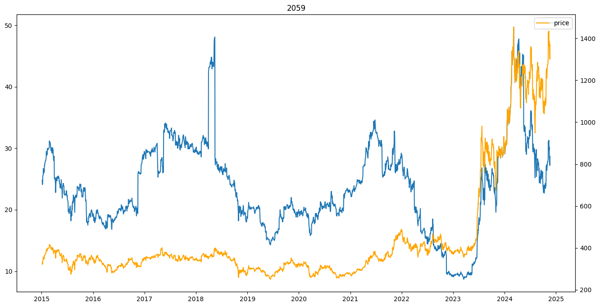
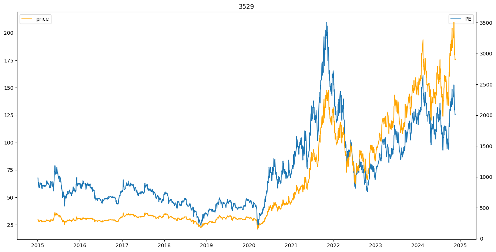
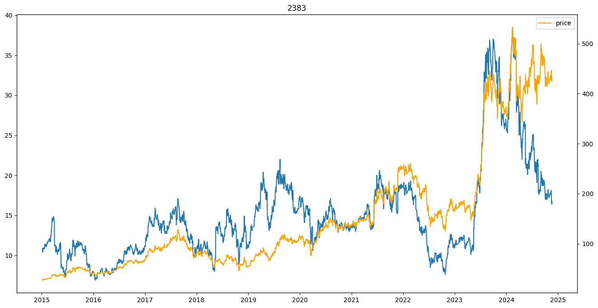
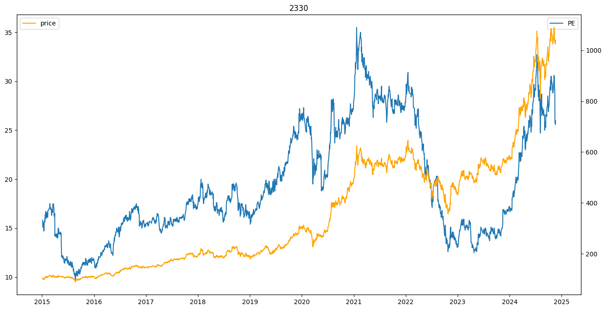
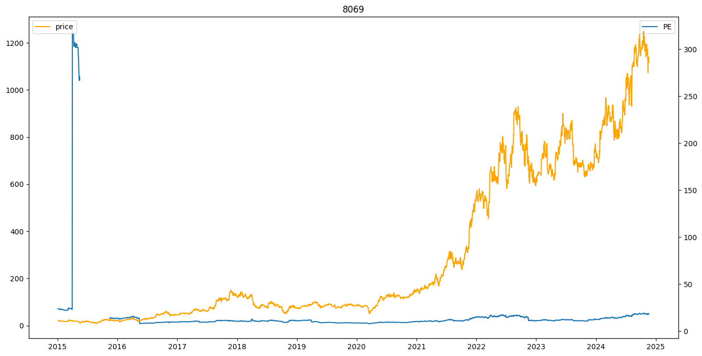
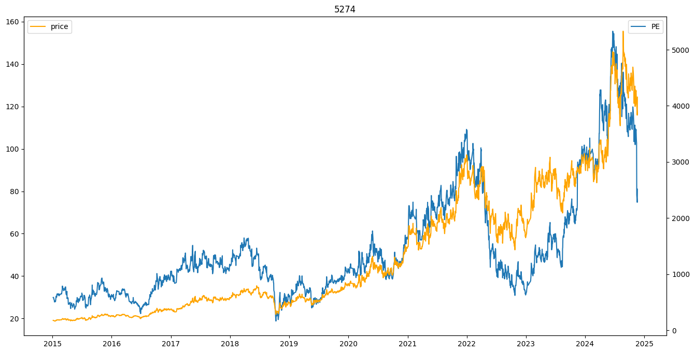
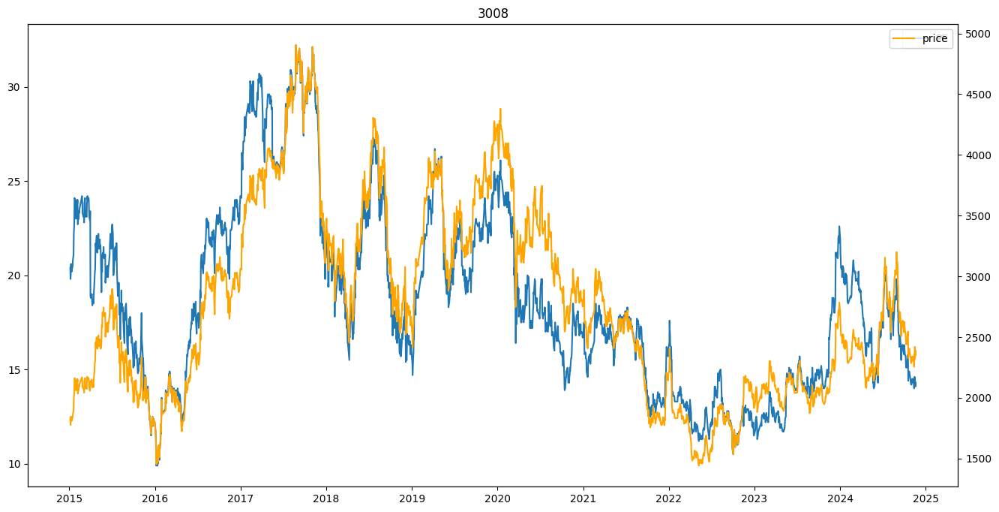
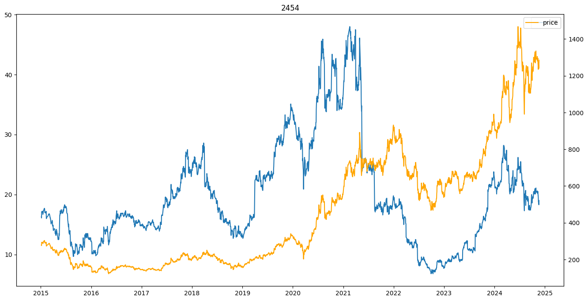
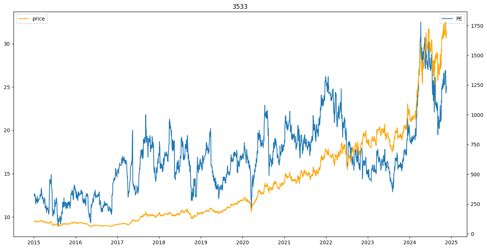

9 tickers 轉折
first look 如何定義轉折
- 趨勢拆分 -> 上漲/盤整/下跌 可以用一條趨勢線(均線)來判斷
- 轉折建立在趨勢之上 轉折就是趨勢的改變 上漲->盤整/下跌, 下跌-> 盤整/上漲, 盤整->上漲/下跌
技術類分析最重要的是 訊號統計的時間長短 就像長天期均線的長期趨勢, 短天期的短期趨勢 也可能會有背離的情況
Default setting -> keep holding
import re
import pickle
import pandas as pd
import matplotlib.pyplot as plt
price_df = pd.read_feather('/Users/roberthsu/Documents/TrendForce_project/cmoney_warehouse/daily/org_price.ftr')
price0050 = price_df[price_df['股票代號']=='0050']
price0050['日期_dt'] = pd.to_datetime(price0050['日期'])
price0050.sort_values('日期_dt', inplace=True, ascending=True)
price0050.reset_index(drop=True, inplace=True)
/var/folders/l8/m7cjxss57kbc_bplh66qpmy40000gn/T/ipykernel_6936/2447510086.py:2: SettingWithCopyWarning:
A value is trying to be set on a copy of a slice from a DataFrame.
Try using .loc[row_indexer,col_indexer] = value instead
See the caveats in the documentation: https://pandas.pydata.org/pandas-docs/stable/user_guide/indexing.html#returning-a-view-versus-a-copy
price0050['日期_dt'] = pd.to_datetime(price0050['日期'])
/var/folders/l8/m7cjxss57kbc_bplh66qpmy40000gn/T/ipykernel_6936/2447510086.py:3: SettingWithCopyWarning:
A value is trying to be set on a copy of a slice from a DataFrame
See the caveats in the documentation: https://pandas.pydata.org/pandas-docs/stable/user_guide/indexing.html#returning-a-view-versus-a-copy
price0050.sort_values('日期_dt', inplace=True, ascending=True)
SUB_TICKERS = ['2059', '3529', '2383', '2330', '8069', '5274', '3008', '2454', '3533']
price_df = price_df[price_df['股票代號'].isin(SUB_TICKERS)]
price_df['日期_dt'] = pd.to_datetime(price_df['日期'])
price_df.sort_values('日期_dt', inplace=True, ascending=True)
price_df.reset_index(drop=True, inplace=True)
def holding_nDays(df):
for n in [5, 10, 20, 60, 120]:
df[f'hold_{n}Days_ret'] = (df['收盤價'].shift(-n) / df['收盤價']) - 1
df[f'hold_{n}Days_ret'] = df[f'hold_{n}Days_ret'].shift(-1) # 實際上隔日才能操作
df[f'last_{n}Days_ret'] = df[f'hold_{n}Days_ret'].shift(n + 2) # 實際上隔日才能操作
df[f'hold_{n}Days_winrate'] = df[f'hold_{n}Days_ret'].apply(lambda x : 1 if x > 0 else 0)
return df
price_df = price_df.groupby('股票代號').apply(holding_nDays).reset_index(drop=True)
/var/folders/l8/m7cjxss57kbc_bplh66qpmy40000gn/T/ipykernel_6936/392270890.py:1: DeprecationWarning: DataFrameGroupBy.apply operated on the grouping columns. This behavior is deprecated, and in a future version of pandas the grouping columns will be excluded from the operation. Either pass `include_groups=False` to exclude the groupings or explicitly select the grouping columns after groupby to silence this warning.
price_df = price_df.groupby('股票代號').apply(holding_nDays).reset_index(drop=True)
price0050 = price0050.groupby('股票代號').apply(holding_nDays).reset_index(drop=True)
/var/folders/l8/m7cjxss57kbc_bplh66qpmy40000gn/T/ipykernel_6936/2395123834.py:1: DeprecationWarning: DataFrameGroupBy.apply operated on the grouping columns. This behavior is deprecated, and in a future version of pandas the grouping columns will be excluded from the operation. Either pass `include_groups=False` to exclude the groupings or explicitly select the grouping columns after groupby to silence this warning.
price0050 = price0050.groupby('股票代號').apply(holding_nDays).reset_index(drop=True)
可不可以 給一個策略當作input df (w/ signal columns) -> output buy&hold/ signal based trading result & pkl for backtesting
即使buy&hold 的勝率多次贏過本身 但是考慮手續費之後 PnL仍是輸
若是使用betting的方式 需要開槓桿 但槓桿太大前期爆掉 最終仍是輸
也許勝率不是那麼重要 期望報酬要高過一般日子才行
price_df = price_df.merge(price0050, how='left', left_on=(['日期_dt']), right_on=(['日期_dt']), suffixes=('', '_0050'))
price_df['signal'] = 0
price_df.loc[(price_df['股票代號'].isin(['2330', '8069'])), 'signal'] = 1
price_df['5MA'] = price_df.groupby('股票代號')['收盤價'].rolling(5).mean().reset_index(drop=True)
price_df['10MA'] = price_df.groupby('股票代號')['收盤價'].rolling(10).mean().reset_index(drop=True)
price_df['20MA'] = price_df.groupby('股票代號')['收盤價'].rolling(20).mean().reset_index(drop=True)
price_df['60MA'] = price_df.groupby('股票代號')['收盤價'].rolling(60).mean().reset_index(drop=True)
price_df['400MA'] = price_df.groupby('股票代號')['收盤價'].rolling(20*20).mean().reset_index(drop=True)
price_df['1200MA'] = price_df.groupby('股票代號')['收盤價'].rolling(60*20).mean().reset_index(drop=True)
price_df['signal'] = 0
price_df.loc[(price_df['60MA']>price_df['400MA']) & (price_df['20MA']>price_df['60MA']) & (price_df['5MA']>price_df['20MA']), 'signal'] = 1
tmp = price_df[(price_df['股票代號']=='2330') & (price_df['日期_dt']>='20150101')]
for ticker in SUB_TICKERS:
tmp = price_df[(price_df['股票代號']==ticker) & (price_df['日期_dt']>='20150101')]
fig = plt.figure(figsize=(16, 8))
ax1 = fig.add_subplot(111)
ax1.plot(tmp['日期_dt'], tmp['本益比(近四季)'], label='PE')
ax2 = ax1.twinx()
ax2.plot(tmp['日期_dt'], tmp['收盤價'],color='orange', label='price')
ax1.set_title(ticker)
ax1.legend()
ax2.legend()









想法1.
我們就做長期 依據財報, PE等方式去做一個長期策略 -> 一次bet 一季 只要能避開大跌的期間 以60~70 time in markets 去beat buy&hold挺有機會的
至少我們交易的很不頻繁
想法2.
短期的策略 就以輔助的方式搭配 不要求訊號數量, 次數, 集中度 單純以buy&hold勝率為依歸 這樣一定可以增加組合策略的勝率
tmp['']
price_df.loc[price_df['股票代號']=='2330', ['收盤價', 'hold_5Days_ret', 'last_5Days_ret']].iloc[-20::]
.dataframe tbody tr th {
vertical-align: top;
}
.dataframe thead th {
text-align: right;
}
margin_df = pd.read_feather('/Users/roberthsu/Documents/TrendForce_project/cmoney_warehouse/daily/dayMarginTrading.ftr', columns=['日期', '股票代號', '資餘', '券餘', '券資比', '當沖比率', '融資成本(推估)', '融券成本(推估)', '融資維持率(%)', '融券維持率(%)','整體維持率(%)'])
price_df = price_df.merge(margin_df, how='left', left_on=(['日期', '股票代號']), right_on=(['日期', '股票代號']))
price_df['維持率反推融資平均損益'] = ((price_df['融資維持率(%)'] * 0.6) - 100) /100
price_df['signal'] = 0
mask = (price_df['維持率反推融資平均損益']<-0.1)
price_df.loc[mask, 'signal'] = 1
1085/1040
1.0432692307692308
price_df['signal'] = 0
price_df.loc[(price_df['10MA']>price_df['20MA']), 'signal'] = 1
price_df['signal'] = 0
price_df.loc[(price_df['5MA']>price_df['10MA']), 'signal'] = 1
price_df['signal'] = 0
price_df.loc[(price_df['last_5Days_ret']>price_df['last_5Days_ret_0050']), 'signal'] = 1
price_df['signal'] = 0
price_df.loc[(price_df['last_60Days_ret']>price_df['last_60Days_ret_0050']) & (price_df['last_60Days_ret']>0), 'signal'] = 1
price_df['signal'] = 0
mask1 = (price_df['last_5Days_ret']>price_df['last_5Days_ret_0050'])
mask2 = (price_df['last_10Days_ret']>price_df['last_10Days_ret_0050'])
mask3 = (price_df['last_20Days_ret']<price_df['last_20Days_ret_0050'])
mask4 = (price_df['20MA']<price_df['60MA'])
price_df.loc[mask1 & mask2 & mask3 & mask4 , 'signal'] = 1
price_df['signal'] = 0
mask1 = (price_df['last_5Days_ret']>price_df['last_5Days_ret_0050'])
mask2 = (price_df['last_10Days_ret']>price_df['last_10Days_ret_0050'])
mask3 = (price_df['last_20Days_ret']<price_df['last_20Days_ret_0050'])
mask4 = (price_df['20MA']<price_df['60MA'])
price_df.loc[mask4 , 'signal'] = 1
ret_cols = [f'hold_{n}Days_ret' for n in [5, 10, 20, 60, 120]]
winrate_cols = [f'hold_{n}Days_winrate' for n in [5, 10, 20, 60, 120]]
price_df[(price_df['股票代號']=='2330') & (price_df['signal']==0) & (price_df['日期_dt']>='20150101')]
.dataframe tbody tr th {
vertical-align: top;
}
.dataframe thead th {
text-align: right;
}
price_df['y-m'] = '{}_{}'.format(price_df['日期_dt'].dt.year, price_df['日期_dt'].dt.month)
price_df['y-m']
0 0 2005\n1 2005\n2 2005\n3...
1 0 2005\n1 2005\n2 2005\n3...
2 0 2005\n1 2005\n2 2005\n3...
3 0 2005\n1 2005\n2 2005\n3...
4 0 2005\n1 2005\n2 2005\n3...
...
46258 0 2005\n1 2005\n2 2005\n3...
46259 0 2005\n1 2005\n2 2005\n3...
46260 0 2005\n1 2005\n2 2005\n3...
46261 0 2005\n1 2005\n2 2005\n3...
46262 0 2005\n1 2005\n2 2005\n3...
Name: y-m, Length: 46263, dtype: object
price_df['signal'] = 0
price_df.loc[(price_df['20MA']/price_df['60MA'])-1>0.15, 'signal'] = 1
price_df[(price_df['signal']==1) & (price_df['日期_dt']>='20150101')].groupby('股票代號')[ret_cols].mean() - price_df[(price_df['日期_dt']>='20150101')].groupby('股票代號')[ret_cols].mean()
.dataframe tbody tr th {
vertical-align: top;
}
.dataframe thead th {
text-align: right;
}
price_df[['日期', '股票代號', 'signal']+ret_cols+winrate_cols].to_feather('/Users/roberthsu/Documents/TrendForce_project/TW_forwardPE/data/test_get_strategy_result/test.ftr')
python3 src/backtest.py /Users/roberthsu/Documents/TrendForce_project/TW_forwardPE/data/test_get_strategy_result/test_3533.pkl /Users/roberthsu/Documents/TrendForce_project/TW_forwardPE/data/ticker_pnl/3533 –capital 1000000000 –start_date 20150101 –end_date 20241014 –commission 0.000855 –rebalance 0
週集保
weekly_depostie = pd.read_feather('/Users/roberthsu/Documents/TrendForce_project/cmoney_warehouse/weeklyDepository.ftr')
weekly_depostie = weekly_depostie[weekly_depostie['股票代號'].isin(SUB_TICKERS)]
weekly_depostie.sort_values('日期', inplace=True)
weekly_depostie.reset_index(drop=True, inplace=True)
agg = weekly_depostie[weekly_depostie['持股分級'].isin(['0400001-0600000', '0600001-0800000', '0800001-1000000', '1000001以上'])].groupby(['日期', '股票代號'])['佔集保庫存數比例(%)'].sum().to_frame()
agg.reset_index(drop=False, inplace=True)
agg
.dataframe tbody tr th {
vertical-align: top;
}
.dataframe thead th {
text-align: right;
}
company_event = pd.read_feather('/Users/roberthsu/Documents/TrendForce_project/cmoney_warehouse/daily/company_event.ftr')
company_event = company_event[company_event['股票代號'].isin(SUB_TICKERS)]
date_pattern = r'^\d{8}$'
company_event = company_event[company_event['日期'].str.contains(date_pattern)]
company_event['日期_dt'] = pd.to_datetime(company_event['日期'])
company_event['friday_of_week'] = company_event['日期_dt'] + pd.offsets.Week(weekday=4)
company_event['adjust_week'] = 0
company_event.loc[(company_event['新股上市']==0) | (company_event['減資前']==0), 'adjust_week'] = 1
agg['日期_dt'] = pd.to_datetime(agg['日期'])
agg['year'] = agg['日期_dt'].dt.year
agg['週集保月線'] = agg.groupby(['股票代號'])['佔集保庫存數比例(%)'].rolling(4).mean().reset_index(level=0, drop=True)
agg['週集保半年線'] = agg.groupby(['股票代號'])['佔集保庫存數比例(%)'].rolling(24).mean().reset_index(level=0, drop=True)
agg['週集保diff'] = agg.groupby(['股票代號'])['佔集保庫存數比例(%)'].diff().reset_index(level=0, drop=True)
agg = agg.merge(company_event.loc[company_event['adjust_week']==1, ['friday_of_week', '股票代號', '減資前', '新股上市', 'adjust_week']], how='left', left_on=(['日期_dt', '股票代號']), right_on=(['friday_of_week', '股票代號']))
# 有股數異動 當周週集保diff -> 0
agg.loc[agg['adjust_week']==1, '週集保diff'] = 0
agg['週集保diff4week'] = agg.groupby(['股票代號'])['週集保diff'].rolling(4).sum().reset_index(level=0, drop=True)
price_df = price_df.merge(agg, how='left', left_on=(['日期', '股票代號']), right_on=(['日期', '股票代號']))
price_df.columns
Index(['日期', '股票代號', '股票名稱', '開盤價', '最高價', '最低價', '收盤價', '漲跌', '漲幅(%)',
'振幅(%)', '成交量', '成交筆數', '成交金額(千)', '均張', '成交量變動(%)', '均張變動(%)',
'股本(百萬)', '總市值(億)', '市值比重(%)', '本益比', '股價淨值比', '本益比(近四季)', '週轉率(%)',
'成交值比重(%)', '漲跌停', 'RTIME', '日期_dt_x', 'hold_5Days_ret',
'last_5Days_ret', 'hold_5Days_winrate', 'hold_10Days_ret',
'last_10Days_ret', 'hold_10Days_winrate', 'hold_20Days_ret',
'last_20Days_ret', 'hold_20Days_winrate', 'hold_60Days_ret',
'last_60Days_ret', 'hold_60Days_winrate', 'hold_120Days_ret',
'last_120Days_ret', 'hold_120Days_winrate', '日期_0050', '股票代號_0050',
'股票名稱_0050', '開盤價_0050', '最高價_0050', '最低價_0050', '收盤價_0050', '漲跌_0050',
'漲幅(%)_0050', '振幅(%)_0050', '成交量_0050', '成交筆數_0050', '成交金額(千)_0050',
'均張_0050', '成交量變動(%)_0050', '均張變動(%)_0050', '股本(百萬)_0050',
'總市值(億)_0050', '市值比重(%)_0050', '本益比_0050', '股價淨值比_0050',
'本益比(近四季)_0050', '週轉率(%)_0050', '成交值比重(%)_0050', '漲跌停_0050',
'RTIME_0050', 'hold_5Days_ret_0050', 'last_5Days_ret_0050',
'hold_5Days_winrate_0050', 'hold_10Days_ret_0050',
'last_10Days_ret_0050', 'hold_10Days_winrate_0050',
'hold_20Days_ret_0050', 'last_20Days_ret_0050',
'hold_20Days_winrate_0050', 'hold_60Days_ret_0050',
'last_60Days_ret_0050', 'hold_60Days_winrate_0050',
'hold_120Days_ret_0050', 'last_120Days_ret_0050',
'hold_120Days_winrate_0050', '佔集保庫存數比例(%)', '日期_dt_y', 'year', '週集保月線',
'週集保半年線', '週集保diff', 'friday_of_week', '減資前', '新股上市', 'adjust_week',
'週集保diff4week'],
dtype='object')
price_df['週集保diff4week']
0 NaN
1 NaN
2 NaN
3 NaN
4 NaN
...
46258 NaN
46259 NaN
46260 -0.490007
46261 NaN
46262 NaN
Name: 週集保diff4week, Length: 46263, dtype: float64
# 近一個月 400張大戶 增加2%以上
price_df['signal'] = 0
price_df.loc[(price_df['週集保diff4week']>2), 'signal'] = 1
price_df['日期_dt'] = pd.to_datetime(price_df['日期'])
price_df[(price_df['signal']==1) & (price_df['日期_dt']>='20150101')].groupby('股票代號')[ret_cols].mean() - price_df[(price_df['日期_dt']>='20150101')].groupby('股票代號')[ret_cols].mean()
.dataframe tbody tr th {
vertical-align: top;
}
.dataframe thead th {
text-align: right;
}
price_df[price_df['股票代號']=='2330']
.dataframe tbody tr th {
vertical-align: top;
}
.dataframe thead th {
text-align: right;
}
hold_10Days_ret > 2% 可以beat 大盤 但不代表能beat 自己…
print(price_df.groupby('股票代號')[ret_cols].mean())
print(price_df[price_df['signal']==1].groupby('股票代號')[ret_cols].mean())
hold_5Days_ret hold_10Days_ret hold_20Days_ret hold_60Days_ret \
股票代號
2059 0.005010 0.009969 0.020130 0.059021
2330 0.005216 0.010177 0.020035 0.061843
2383 0.005636 0.011274 0.022439 0.071093
2454 0.004865 0.009519 0.019327 0.061709
3008 0.004938 0.009546 0.019329 0.061985
3529 0.007856 0.015724 0.032443 0.101927
3533 0.007224 0.014696 0.030170 0.094578
5274 0.009307 0.018046 0.035860 0.108759
8069 0.005403 0.010970 0.022678 0.073954
hold_120Days_ret
股票代號
2059 0.111671
2330 0.133989
2383 0.142366
2454 0.121948
3008 0.131951
3529 0.228197
3533 0.216573
5274 0.222019
8069 0.163949
hold_5Days_ret hold_10Days_ret hold_20Days_ret hold_60Days_ret \
股票代號
2059 0.006141 0.011580 0.021498 0.061662
2330 0.003288 0.007023 0.013864 0.040244
2383 0.001164 0.003849 0.014555 0.079123
2454 0.004328 0.008477 0.018784 0.056963
3008 0.002090 0.005535 0.017011 0.060006
3529 0.010187 0.019267 0.038427 0.094904
3533 0.005359 0.013237 0.031580 0.086461
5274 0.013677 0.022356 0.043726 0.127794
8069 0.005168 0.010064 0.021985 0.065210
hold_120Days_ret
股票代號
2059 0.136334
2330 0.113531
2383 0.154729
2454 0.107311
3008 0.088257
3529 0.209398
3533 0.189905
5274 0.267122
8069 0.121988
print(price_df[price_df['signal']==1].groupby('股票代號')[ret_cols].mean() - price_df.groupby('股票代號')[ret_cols].mean())
hold_5Days_ret hold_10Days_ret hold_20Days_ret hold_60Days_ret \
股票代號
2059 0.001131 0.001611 0.001367 0.002641
2330 -0.001929 -0.003154 -0.006171 -0.021600
2383 -0.004471 -0.007425 -0.007884 0.008030
2454 -0.000537 -0.001042 -0.000543 -0.004746
3008 -0.002848 -0.004011 -0.002317 -0.001979
3529 0.002331 0.003543 0.005984 -0.007023
3533 -0.001865 -0.001459 0.001410 -0.008117
5274 0.004370 0.004310 0.007865 0.019035
8069 -0.000235 -0.000906 -0.000693 -0.008743
hold_120Days_ret
股票代號
2059 0.024663
2330 -0.020458
2383 0.012362
2454 -0.014637
3008 -0.043694
3529 -0.018799
3533 -0.026669
5274 0.045103
8069 -0.041961
price_df[['日期', '股票代號', 'signal']+ret_cols+winrate_cols].to_feather('/Users/roberthsu/Documents/TrendForce_project/TW_forwardPE/data/test_get_strategy_result/test.df')
price_df[(price_df['股票代號']=='2330') & (price_df['signal']==1)]
.dataframe tbody tr th {
vertical-align: top;
}
.dataframe thead th {
text-align: right;
}
def vector_backtest(df):
# input: df, 需要有signa columns, output : [[trade_data1], [trade_data2], ...] (list中包含多個list)
# df['signal'] != df['signal'].shift(1) 會return boolean, 對此用cumsum
# 在false的時候 就不會+1 就可以讓連續的組出現一樣的數字
# [0 , 1, 1, 0, 0, 1, 1, 1] (df['signal'])
# [nan, 0, 1, 1, 0, 0, 1, 1] (df['signal'].shift(1))
# [T, T, F, T, F, T, F, F] -> [1, 2, 2, 3, 3, 4, 4, 4]
# 然而連續組 同時包含signal==1 & signal==0 部分
# 利用df[signal]==1 來取得signal==1的index
if not all(col in df.columns for col in ['日期', '股票代號', '收盤價', 'signal']):
raise KeyError("df.columns should have 日期, 股票代號, 收盤價, signal")
df['次日收盤價'] = df['收盤價'].shift(-1)
df['次二日收盤價'] = df['收盤價'].shift(-2)
# 將所有連續的事件相同數字表示, 而事件轉換時, 數字不相同
change_indices = (df['signal'] != df['signal'].shift(1)).cumsum()
# 只想要group signal==1的事件
groups = df[df['signal'] == 1].groupby(change_indices[df['signal'] == 1])
event_list_all = []
for _, group in groups:
'''
盤後才知道訊號, 故操作都會在後續日期...
訊號開始日期(start_date): 該日收盤後有符合訊號, 故買入價會是隔一日的收盤價
訊號最後日期(end_date): 代表隔日收盤後就無訊號, 故賣出價是訊號最後日的隔二日收盤價
ex: date=[10/1, 10/2, 10/3, 10/4], signal = [1, 1, 0, 0]
則10/1為訊號開始日期 -> 10/2收盤價買入
10/2為訊號最後日期 -> 10/3收盤才知道訊號結束 -> 10/4收盤賣出
'''
com_code = group['股票代號'].iloc[-1]
start_date = group['日期'].iloc[0]
end_date = group['日期'].iloc[-1]
buy_price = group['次日收盤價'].iloc[0]
sell_price = group['次二日收盤價'].iloc[-1]
ret = (sell_price/buy_price) - 1
holding_days = len(group)
event_list = [com_code, start_date, end_date, buy_price, sell_price, ret, holding_days]
event_list_all.append(event_list)
return event_list_all
res_list = price_df.groupby('股票代號').apply(vector_backtest)
/var/folders/l8/m7cjxss57kbc_bplh66qpmy40000gn/T/ipykernel_1703/406165768.py:1: DeprecationWarning: DataFrameGroupBy.apply operated on the grouping columns. This behavior is deprecated, and in a future version of pandas the grouping columns will be excluded from the operation. Either pass `include_groups=False` to exclude the groupings or explicitly select the grouping columns after groupby to silence this warning.
res_list = price_df.groupby('股票代號').apply(vector_backtest)
res_df = pd.DataFrame()
for data in res_list:
tmp = pd.DataFrame(data, columns=['股票代號', '訊號開始日', '訊號結束日', '買入價格', '賣出價格', 'return', '訊號持續天數'])
res_df = pd.concat([res_df, tmp], ignore_index=True)
res_df.loc[res_df['return'] >= 0.1, '訊號持續天數'].describe()
count 121.000000
mean 124.033058
std 53.726457
min 52.000000
25% 88.000000
50% 112.000000
75% 154.000000
max 373.000000
Name: 訊號持續天數, dtype: float64
res_df.loc[(res_df['股票代號']=='5274') & (res_df['訊號開始日']>='20150101')].iloc[-20::]
.dataframe tbody tr th {
vertical-align: top;
}
.dataframe thead th {
text-align: right;
}
res_df['adjust_return'] = res_df['return'] + 1 - 0.00585
res_df['winrate'] = (res_df['return'] - 0.00585).apply(lambda x : 1 if x > 0 else 0)
res_df.loc[(res_df['股票代號']=='2383') & mask, 'winrate'].mean()
np.float64(0.45454545454545453)
我覺得目前的goal 應該是 用50%的time in market 去複製100%的 buy&hold return
res_df.loc[(res_df['股票代號']=='2383'), 'adjust_return'].cumprod()
117 1.810718
118 1.665188
119 1.443913
120 1.407983
121 1.391848
...
173 109.515373
174 204.122405
175 180.569503
176 187.847619
177 181.006643
Name: adjust_return, Length: 61, dtype: float64
mask = (res_df['訊號開始日']>='20150101')
for ticker in SUB_TICKERS:
print(ticker, '-'*50)
print(res_df.loc[(res_df['股票代號']==ticker) & mask, 'winrate'].mean())
2059 --------------------------------------------------
0.4
3529 --------------------------------------------------
0.55
2383 --------------------------------------------------
0.47619047619047616
2330 --------------------------------------------------
0.3888888888888889
8069 --------------------------------------------------
0.34782608695652173
5274 --------------------------------------------------
0.48
3008 --------------------------------------------------
0.36363636363636365
2454 --------------------------------------------------
0.375
3533 --------------------------------------------------
0.56
這些訊號給出來的metric, 像是勝率, return, 持有天數等 跟 他最後會不會beat 自己buy&hold 幾乎沒有關係啊
mask = (res_df['訊號開始日']>='20150101')
for ticker in SUB_TICKERS:
print(ticker, '-'*50)
print(res_df.loc[(res_df['股票代號']==ticker) & mask, 'adjust_return'].cumprod())
2059 --------------------------------------------------
24 1.073704
25 1.018269
26 0.945617
27 0.845300
28 0.842448
29 0.910435
30 0.898349
31 0.855847
32 0.859924
33 0.801080
34 0.877663
35 0.833737
36 0.858505
37 1.056661
38 1.195902
39 1.073666
40 0.940826
41 0.824905
42 1.851978
43 1.812821
44 2.450083
45 2.413792
46 1.736088
47 1.803436
48 NaN
Name: adjust_return, dtype: float64
3529 --------------------------------------------------
290 1.076862
291 1.167435
292 1.126389
293 1.205862
294 1.234166
295 1.300546
296 1.197866
297 1.587103
298 1.434322
299 1.238858
300 2.135981
301 6.921280
302 5.858060
303 7.066384
304 5.178796
305 6.127953
306 5.022745
307 5.493311
308 5.414622
309 NaN
Name: adjust_return, dtype: float64
2383 --------------------------------------------------
157 1.112279
158 1.625003
159 2.777402
160 2.411179
161 2.159258
162 2.034499
163 1.706952
164 1.923004
165 2.544269
166 2.371492
167 3.023427
168 2.996076
169 2.868855
170 3.427143
171 3.302461
172 2.672966
173 2.702668
174 5.037422
175 4.456173
176 4.635785
177 4.466961
Name: adjust_return, dtype: float64
2330 --------------------------------------------------
99 1.001018
100 0.951451
101 0.914398
102 1.073984
103 1.359107
104 1.228982
105 1.201381
106 1.191747
107 1.494818
108 3.089858
109 3.087672
110 2.853159
111 2.624442
112 2.417448
113 2.496526
114 2.387259
115 4.267665
116 NaN
Name: adjust_return, dtype: float64
8069 --------------------------------------------------
406 0.932812
407 0.862994
408 0.731373
409 0.709861
410 0.675080
411 0.868220
412 0.987306
413 1.468501
414 1.378200
415 1.281044
416 1.176988
417 1.093618
418 0.938823
419 0.915257
420 1.304457
421 2.408282
422 3.418989
423 3.124307
424 2.933280
425 2.596925
426 2.436734
427 2.860606
428 3.534959
Name: adjust_return, dtype: float64
5274 --------------------------------------------------
356 0.904797
357 0.973301
358 0.850189
359 0.709661
360 1.012892
361 1.373308
362 1.357244
363 1.285224
364 1.465160
365 1.145891
366 1.364235
367 1.299606
368 1.883455
369 2.176361
370 1.947718
371 2.622040
372 2.722958
373 4.100028
374 3.303204
375 2.813203
376 2.285256
377 2.561143
378 2.513802
379 3.184337
380 2.797540
Name: adjust_return, dtype: float64
3008 --------------------------------------------------
258 0.841805
259 1.122336
260 1.459913
261 1.414091
262 1.437946
263 1.217818
264 1.412450
265 1.504805
266 1.385123
267 1.499093
268 1.486417
269 1.344414
270 1.223020
271 1.147694
272 0.994990
273 1.185986
274 1.176260
275 1.089812
276 1.004914
277 0.980553
278 1.132073
279 1.130728
Name: adjust_return, dtype: float64
2454 --------------------------------------------------
209 0.786954
210 0.796381
211 0.642395
212 0.707082
213 0.693239
214 0.839686
215 0.827908
216 0.830901
217 0.763173
218 1.229403
219 1.876080
220 2.592754
221 2.548452
222 2.304537
223 2.232255
224 2.184971
225 1.650349
226 1.561482
227 1.355056
228 1.315666
229 1.829784
230 1.889384
231 1.710543
232 NaN
Name: adjust_return, dtype: float64
3533 --------------------------------------------------
325 0.942288
326 1.023214
327 0.957079
328 0.856791
329 0.797596
330 0.798283
331 1.285934
332 1.172076
333 1.177846
334 1.184177
335 1.352032
336 1.760839
337 2.377330
338 2.208059
339 2.452912
340 2.617768
341 3.336348
342 2.708993
343 2.840251
344 2.765888
345 2.598835
346 2.516225
347 2.636359
348 3.972125
349 NaN
Name: adjust_return, dtype: float64
res_df.loc[res_df['股票代號']=='2330'].iloc[-20::]
.dataframe tbody tr th {
vertical-align: top;
}
.dataframe thead th {
text-align: right;
}
res_df.groupby('股票代號')['return'].mean()
股票代號
2059 0.004077
2330 0.002834
2383 0.004765
2454 0.001114
3008 0.001128
3529 0.002985
3533 0.008237
5274 0.001990
8069 0.003285
Name: return, dtype: float64
benchmark buy&hold all return -> start 2016
price_df[(price_df['股票代號']=='2330') & (price_df['日期_dt']>='20030101')]
年化26% -> 100->1000的股票in 10y
(1.26)**10
在做複雜的test 之前 我們來簡單搞一個
如果20日線 > 60日線 持有反之賣出
我們來看這樣的持有時間長短, 最終return 並用quntstats present
sub = price_df[(price_df['股票代號']=='2330') & (price_df['日期_dt']>'20030101')]
sub
import pandas as pd
import numpy as np
from scipy.signal import argrelextrema
import matplotlib.pyplot as plt
# Example stock price data
data = pd.Series([np.nan, 100, 102, 105, 99, 101, 103, 95, 96, 97, 99, 98, np.nan])
# Step 1: Identify local maxima and minima (avoid future data)
window = 2 # Window size for extrema detection
local_max_indices = argrelextrema(data.values, np.greater, order=window)[0]
local_min_indices = argrelextrema(data.values, np.less, order=window)[0]
# Extract local maxima and minima, ensuring proper alignment (avoid leakage)
local_maxima = pd.Series(data.iloc[local_max_indices].values, index=data.index[local_max_indices])
local_minima = pd.Series(data.iloc[local_min_indices].values, index=data.index[local_min_indices])
# Step 2: Compare successive maxima
max_comparisons_larger_idx = []
max_comparisons_smaller_idx = []
if len(local_maxima) > 1:
for i in range(len(local_maxima) - 1):
current_max = local_maxima.iloc[i]
next_max = local_maxima.iloc[i + 1]
if next_max > current_max:
max_comparisons_larger_idx.append(local_maxima.index[i+1])
else:
max_comparisons_smaller_idx.append(local_maxima.index[i+1])
# Step 3: Compare successive minima
min_comparisons = []
if len(local_minima) > 1:
for i in range(len(local_minima) - 1):
current_min = local_minima.iloc[i]
next_min = local_minima.iloc[i + 1]
if next_min > current_min:
min_comparisons.append(f"Min at index {local_minima.index[i+1]} is larger.")
else:
min_comparisons.append(f"Min at index {local_minima.index[i+1]} is smaller.")
# Step 4: Display results
print("Maxima Comparisons:")
print("\n".join(max_comparisons))
print("\nMinima Comparisons:")
print("\n".join(min_comparisons))
# Step 5: Visualize results
plt.figure(figsize=(12, 6))
plt.plot(data, label='Stock Prices', marker='o')
plt.scatter(local_maxima.index, local_maxima, color='red', label='Local Maxima', zorder=3)
plt.scatter(local_minima.index, local_minima, color='green', label='Local Minima', zorder=3)
plt.title("Stock Prices with Local Extrema")
plt.legend()
plt.show()
Maxima Comparisons:
---------------------------------------------------------------------------
NameError Traceback (most recent call last)
Cell In[285], line 43
41 # Step 4: Display results
42 print("Maxima Comparisons:")
---> 43 print("\n".join(max_comparisons))
45 print("\nMinima Comparisons:")
46 print("\n".join(min_comparisons))
NameError: name 'max_comparisons' is not defined
max_comparisons_smaller_idx
local_max_indices
local_maxima
from scipy.signal import argrelextrema
import matplotlib.pyplot as plt
import numpy as np
sub.reset_index(drop=True, inplace=True)
# 1. Identify Local Minima and Maxima
window = 10 # Window size for extrema detection
local_max_indices = argrelextrema(sub['收盤價'].values, np.greater, order=window)[0]
local_min_indices = argrelextrema(sub['收盤價'].values, np.less, order=window)[0]
# Extract local maxima and minima, ensuring proper alignment (avoid leakage)
local_maxima = pd.Series(sub.loc[local_max_indices, '收盤價'].values, index=local_max_indices)
local_minima = pd.Series(sub.loc[local_min_indices, '收盤價'].values, index=local_min_indices)
# Step 2: Compare successive maxima
max_comparisons_larger_idx = []
max_comparisons_smaller_idx = []
if len(local_maxima) > 1:
for i in range(len(local_maxima) - 1):
current_max = local_maxima.iloc[i]
next_max = local_maxima.iloc[i + 1]
if next_max > current_max:
max_comparisons_larger_idx.append(local_maxima.index[i+1])
else:
max_comparisons_smaller_idx.append(local_maxima.index[i+1])
def groupby_extrema(df):
df.reset_index(drop=True, inplace=True)
# 1. Identify Local Minima and Maxima
window = 10 # Window size for extrema detection
local_max_indices = argrelextrema(df['收盤價'].values, np.greater, order=window)[0]
local_min_indices = argrelextrema(df['收盤價'].values, np.less, order=window)[0]
# Extract local maxima and minima, ensuring proper alignment (avoid leakage)
local_maxima = pd.Series(df.loc[local_max_indices, '收盤價'].values, index=local_max_indices)
local_minima = pd.Series(df.loc[local_min_indices, '收盤價'].values, index=local_min_indices)
# Step 2: Compare successive maxima
max_comparisons_larger_idx = []
max_comparisons_smaller_idx = []
if len(local_maxima) > 1:
for i in range(len(local_maxima) - 1):
current_max = local_maxima.iloc[i]
next_max = local_maxima.iloc[i + 1]
if next_max > current_max:
max_comparisons_larger_idx.append(local_maxima.index[i+1])
else:
max_comparisons_smaller_idx.append(local_maxima.index[i+1])
df['max_comparisons_larger'] = None
df.loc[max_comparisons_larger_idx, 'max_comparisons_larger'] = 1
df.loc[max_comparisons_smaller_idx, 'max_comparisons_larger'] = 0
df['max_comparisons_larger'].ffill(inplace=True)
df['max_comparisons_larger'] = df['max_comparisons_larger'].shift(window)
df.loc[max_comparisons_larger_idx, 'local_maxima'] = local_maxima
df['local_maxima'].ffill(inplace=True)
df['local_maxima'] = df['local_maxima'].shift(window)
return df
sub = groupby_extrema(sub)
/var/folders/l8/m7cjxss57kbc_bplh66qpmy40000gn/T/ipykernel_1703/2416033270.py:25: SettingWithCopyWarning:
A value is trying to be set on a copy of a slice from a DataFrame.
Try using .loc[row_indexer,col_indexer] = value instead
See the caveats in the documentation: https://pandas.pydata.org/pandas-docs/stable/user_guide/indexing.html#returning-a-view-versus-a-copy
df['max_comparisons_larger'] = None
/var/folders/l8/m7cjxss57kbc_bplh66qpmy40000gn/T/ipykernel_1703/2416033270.py:28: FutureWarning: A value is trying to be set on a copy of a DataFrame or Series through chained assignment using an inplace method.
The behavior will change in pandas 3.0. This inplace method will never work because the intermediate object on which we are setting values always behaves as a copy.
For example, when doing 'df[col].method(value, inplace=True)', try using 'df.method({col: value}, inplace=True)' or df[col] = df[col].method(value) instead, to perform the operation inplace on the original object.
df['max_comparisons_larger'].ffill(inplace=True)
/var/folders/l8/m7cjxss57kbc_bplh66qpmy40000gn/T/ipykernel_1703/2416033270.py:28: FutureWarning: Downcasting object dtype arrays on .fillna, .ffill, .bfill is deprecated and will change in a future version. Call result.infer_objects(copy=False) instead. To opt-in to the future behavior, set `pd.set_option('future.no_silent_downcasting', True)`
df['max_comparisons_larger'].ffill(inplace=True)
/var/folders/l8/m7cjxss57kbc_bplh66qpmy40000gn/T/ipykernel_1703/2416033270.py:28: SettingWithCopyWarning:
A value is trying to be set on a copy of a slice from a DataFrame
See the caveats in the documentation: https://pandas.pydata.org/pandas-docs/stable/user_guide/indexing.html#returning-a-view-versus-a-copy
df['max_comparisons_larger'].ffill(inplace=True)
/var/folders/l8/m7cjxss57kbc_bplh66qpmy40000gn/T/ipykernel_1703/2416033270.py:29: SettingWithCopyWarning:
A value is trying to be set on a copy of a slice from a DataFrame.
Try using .loc[row_indexer,col_indexer] = value instead
See the caveats in the documentation: https://pandas.pydata.org/pandas-docs/stable/user_guide/indexing.html#returning-a-view-versus-a-copy
df['max_comparisons_larger'] = df['max_comparisons_larger'].shift(window)
/var/folders/l8/m7cjxss57kbc_bplh66qpmy40000gn/T/ipykernel_1703/2416033270.py:31: SettingWithCopyWarning:
A value is trying to be set on a copy of a slice from a DataFrame.
Try using .loc[row_indexer,col_indexer] = value instead
See the caveats in the documentation: https://pandas.pydata.org/pandas-docs/stable/user_guide/indexing.html#returning-a-view-versus-a-copy
df.loc[max_comparisons_larger_idx, 'local_maxima'] = local_maxima
/var/folders/l8/m7cjxss57kbc_bplh66qpmy40000gn/T/ipykernel_1703/2416033270.py:32: FutureWarning: A value is trying to be set on a copy of a DataFrame or Series through chained assignment using an inplace method.
The behavior will change in pandas 3.0. This inplace method will never work because the intermediate object on which we are setting values always behaves as a copy.
For example, when doing 'df[col].method(value, inplace=True)', try using 'df.method({col: value}, inplace=True)' or df[col] = df[col].method(value) instead, to perform the operation inplace on the original object.
df['local_maxima'].ffill(inplace=True)
/var/folders/l8/m7cjxss57kbc_bplh66qpmy40000gn/T/ipykernel_1703/2416033270.py:32: SettingWithCopyWarning:
A value is trying to be set on a copy of a slice from a DataFrame
See the caveats in the documentation: https://pandas.pydata.org/pandas-docs/stable/user_guide/indexing.html#returning-a-view-versus-a-copy
df['local_maxima'].ffill(inplace=True)
/var/folders/l8/m7cjxss57kbc_bplh66qpmy40000gn/T/ipykernel_1703/2416033270.py:33: SettingWithCopyWarning:
A value is trying to be set on a copy of a slice from a DataFrame.
Try using .loc[row_indexer,col_indexer] = value instead
See the caveats in the documentation: https://pandas.pydata.org/pandas-docs/stable/user_guide/indexing.html#returning-a-view-versus-a-copy
df['local_maxima'] = df['local_maxima'].shift(window)
local_maxima
31 15.45
48 16.57
124 22.98
174 26.50
187 26.31
...
5129 545.98
5151 574.46
5242 813.21
5305 1075.19
5384 1090.00
Length: 133, dtype: float64
sub['max_comparisons_larger'] = None
sub.loc[max_comparisons_larger_idx, 'max_comparisons_larger'] = 1
sub.loc[max_comparisons_smaller_idx, 'max_comparisons_larger'] = 0
sub['max_comparisons_larger'].ffill(inplace=True)
sub['max_comparisons_larger'] = sub['max_comparisons_larger'].shift(window)
/var/folders/l8/m7cjxss57kbc_bplh66qpmy40000gn/T/ipykernel_1703/2369469126.py:1: SettingWithCopyWarning:
A value is trying to be set on a copy of a slice from a DataFrame.
Try using .loc[row_indexer,col_indexer] = value instead
See the caveats in the documentation: https://pandas.pydata.org/pandas-docs/stable/user_guide/indexing.html#returning-a-view-versus-a-copy
sub['max_comparisons_larger'] = None
/var/folders/l8/m7cjxss57kbc_bplh66qpmy40000gn/T/ipykernel_1703/2369469126.py:4: FutureWarning: A value is trying to be set on a copy of a DataFrame or Series through chained assignment using an inplace method.
The behavior will change in pandas 3.0. This inplace method will never work because the intermediate object on which we are setting values always behaves as a copy.
For example, when doing 'df[col].method(value, inplace=True)', try using 'df.method({col: value}, inplace=True)' or df[col] = df[col].method(value) instead, to perform the operation inplace on the original object.
sub['max_comparisons_larger'].ffill(inplace=True)
/var/folders/l8/m7cjxss57kbc_bplh66qpmy40000gn/T/ipykernel_1703/2369469126.py:4: FutureWarning: Downcasting object dtype arrays on .fillna, .ffill, .bfill is deprecated and will change in a future version. Call result.infer_objects(copy=False) instead. To opt-in to the future behavior, set `pd.set_option('future.no_silent_downcasting', True)`
sub['max_comparisons_larger'].ffill(inplace=True)
/var/folders/l8/m7cjxss57kbc_bplh66qpmy40000gn/T/ipykernel_1703/2369469126.py:4: SettingWithCopyWarning:
A value is trying to be set on a copy of a slice from a DataFrame
See the caveats in the documentation: https://pandas.pydata.org/pandas-docs/stable/user_guide/indexing.html#returning-a-view-versus-a-copy
sub['max_comparisons_larger'].ffill(inplace=True)
/var/folders/l8/m7cjxss57kbc_bplh66qpmy40000gn/T/ipykernel_1703/2369469126.py:5: SettingWithCopyWarning:
A value is trying to be set on a copy of a slice from a DataFrame.
Try using .loc[row_indexer,col_indexer] = value instead
See the caveats in the documentation: https://pandas.pydata.org/pandas-docs/stable/user_guide/indexing.html#returning-a-view-versus-a-copy
sub['max_comparisons_larger'] = sub['max_comparisons_larger'].shift(window)
sub.loc[max_comparisons_larger_idx, 'local_maxima'] = local_maxima
sub['local_maxima'].ffill(inplace=True)
/var/folders/l8/m7cjxss57kbc_bplh66qpmy40000gn/T/ipykernel_1703/3881827340.py:2: FutureWarning: A value is trying to be set on a copy of a DataFrame or Series through chained assignment using an inplace method.
The behavior will change in pandas 3.0. This inplace method will never work because the intermediate object on which we are setting values always behaves as a copy.
For example, when doing 'df[col].method(value, inplace=True)', try using 'df.method({col: value}, inplace=True)' or df[col] = df[col].method(value) instead, to perform the operation inplace on the original object.
sub['local_maxima'].ffill(inplace=True)
/var/folders/l8/m7cjxss57kbc_bplh66qpmy40000gn/T/ipykernel_1703/3881827340.py:2: SettingWithCopyWarning:
A value is trying to be set on a copy of a slice from a DataFrame
See the caveats in the documentation: https://pandas.pydata.org/pandas-docs/stable/user_guide/indexing.html#returning-a-view-versus-a-copy
sub['local_maxima'].ffill(inplace=True)
price_df = price_df.groupby('股票代號').apply(groupby_extrema)
/var/folders/l8/m7cjxss57kbc_bplh66qpmy40000gn/T/ipykernel_1703/2416033270.py:28: FutureWarning: A value is trying to be set on a copy of a DataFrame or Series through chained assignment using an inplace method.
The behavior will change in pandas 3.0. This inplace method will never work because the intermediate object on which we are setting values always behaves as a copy.
For example, when doing 'df[col].method(value, inplace=True)', try using 'df.method({col: value}, inplace=True)' or df[col] = df[col].method(value) instead, to perform the operation inplace on the original object.
df['max_comparisons_larger'].ffill(inplace=True)
/var/folders/l8/m7cjxss57kbc_bplh66qpmy40000gn/T/ipykernel_1703/2416033270.py:28: FutureWarning: Downcasting object dtype arrays on .fillna, .ffill, .bfill is deprecated and will change in a future version. Call result.infer_objects(copy=False) instead. To opt-in to the future behavior, set `pd.set_option('future.no_silent_downcasting', True)`
df['max_comparisons_larger'].ffill(inplace=True)
/var/folders/l8/m7cjxss57kbc_bplh66qpmy40000gn/T/ipykernel_1703/2416033270.py:32: FutureWarning: A value is trying to be set on a copy of a DataFrame or Series through chained assignment using an inplace method.
The behavior will change in pandas 3.0. This inplace method will never work because the intermediate object on which we are setting values always behaves as a copy.
For example, when doing 'df[col].method(value, inplace=True)', try using 'df.method({col: value}, inplace=True)' or df[col] = df[col].method(value) instead, to perform the operation inplace on the original object.
df['local_maxima'].ffill(inplace=True)
/var/folders/l8/m7cjxss57kbc_bplh66qpmy40000gn/T/ipykernel_1703/2416033270.py:28: FutureWarning: A value is trying to be set on a copy of a DataFrame or Series through chained assignment using an inplace method.
The behavior will change in pandas 3.0. This inplace method will never work because the intermediate object on which we are setting values always behaves as a copy.
For example, when doing 'df[col].method(value, inplace=True)', try using 'df.method({col: value}, inplace=True)' or df[col] = df[col].method(value) instead, to perform the operation inplace on the original object.
df['max_comparisons_larger'].ffill(inplace=True)
/var/folders/l8/m7cjxss57kbc_bplh66qpmy40000gn/T/ipykernel_1703/2416033270.py:28: FutureWarning: Downcasting object dtype arrays on .fillna, .ffill, .bfill is deprecated and will change in a future version. Call result.infer_objects(copy=False) instead. To opt-in to the future behavior, set `pd.set_option('future.no_silent_downcasting', True)`
df['max_comparisons_larger'].ffill(inplace=True)
/var/folders/l8/m7cjxss57kbc_bplh66qpmy40000gn/T/ipykernel_1703/2416033270.py:32: FutureWarning: A value is trying to be set on a copy of a DataFrame or Series through chained assignment using an inplace method.
The behavior will change in pandas 3.0. This inplace method will never work because the intermediate object on which we are setting values always behaves as a copy.
For example, when doing 'df[col].method(value, inplace=True)', try using 'df.method({col: value}, inplace=True)' or df[col] = df[col].method(value) instead, to perform the operation inplace on the original object.
df['local_maxima'].ffill(inplace=True)
/var/folders/l8/m7cjxss57kbc_bplh66qpmy40000gn/T/ipykernel_1703/2416033270.py:28: FutureWarning: A value is trying to be set on a copy of a DataFrame or Series through chained assignment using an inplace method.
The behavior will change in pandas 3.0. This inplace method will never work because the intermediate object on which we are setting values always behaves as a copy.
For example, when doing 'df[col].method(value, inplace=True)', try using 'df.method({col: value}, inplace=True)' or df[col] = df[col].method(value) instead, to perform the operation inplace on the original object.
df['max_comparisons_larger'].ffill(inplace=True)
/var/folders/l8/m7cjxss57kbc_bplh66qpmy40000gn/T/ipykernel_1703/2416033270.py:28: FutureWarning: Downcasting object dtype arrays on .fillna, .ffill, .bfill is deprecated and will change in a future version. Call result.infer_objects(copy=False) instead. To opt-in to the future behavior, set `pd.set_option('future.no_silent_downcasting', True)`
df['max_comparisons_larger'].ffill(inplace=True)
/var/folders/l8/m7cjxss57kbc_bplh66qpmy40000gn/T/ipykernel_1703/2416033270.py:32: FutureWarning: A value is trying to be set on a copy of a DataFrame or Series through chained assignment using an inplace method.
The behavior will change in pandas 3.0. This inplace method will never work because the intermediate object on which we are setting values always behaves as a copy.
For example, when doing 'df[col].method(value, inplace=True)', try using 'df.method({col: value}, inplace=True)' or df[col] = df[col].method(value) instead, to perform the operation inplace on the original object.
df['local_maxima'].ffill(inplace=True)
/var/folders/l8/m7cjxss57kbc_bplh66qpmy40000gn/T/ipykernel_1703/2416033270.py:28: FutureWarning: A value is trying to be set on a copy of a DataFrame or Series through chained assignment using an inplace method.
The behavior will change in pandas 3.0. This inplace method will never work because the intermediate object on which we are setting values always behaves as a copy.
For example, when doing 'df[col].method(value, inplace=True)', try using 'df.method({col: value}, inplace=True)' or df[col] = df[col].method(value) instead, to perform the operation inplace on the original object.
df['max_comparisons_larger'].ffill(inplace=True)
/var/folders/l8/m7cjxss57kbc_bplh66qpmy40000gn/T/ipykernel_1703/2416033270.py:28: FutureWarning: Downcasting object dtype arrays on .fillna, .ffill, .bfill is deprecated and will change in a future version. Call result.infer_objects(copy=False) instead. To opt-in to the future behavior, set `pd.set_option('future.no_silent_downcasting', True)`
df['max_comparisons_larger'].ffill(inplace=True)
/var/folders/l8/m7cjxss57kbc_bplh66qpmy40000gn/T/ipykernel_1703/2416033270.py:32: FutureWarning: A value is trying to be set on a copy of a DataFrame or Series through chained assignment using an inplace method.
The behavior will change in pandas 3.0. This inplace method will never work because the intermediate object on which we are setting values always behaves as a copy.
For example, when doing 'df[col].method(value, inplace=True)', try using 'df.method({col: value}, inplace=True)' or df[col] = df[col].method(value) instead, to perform the operation inplace on the original object.
df['local_maxima'].ffill(inplace=True)
/var/folders/l8/m7cjxss57kbc_bplh66qpmy40000gn/T/ipykernel_1703/2416033270.py:28: FutureWarning: A value is trying to be set on a copy of a DataFrame or Series through chained assignment using an inplace method.
The behavior will change in pandas 3.0. This inplace method will never work because the intermediate object on which we are setting values always behaves as a copy.
For example, when doing 'df[col].method(value, inplace=True)', try using 'df.method({col: value}, inplace=True)' or df[col] = df[col].method(value) instead, to perform the operation inplace on the original object.
df['max_comparisons_larger'].ffill(inplace=True)
/var/folders/l8/m7cjxss57kbc_bplh66qpmy40000gn/T/ipykernel_1703/2416033270.py:28: FutureWarning: Downcasting object dtype arrays on .fillna, .ffill, .bfill is deprecated and will change in a future version. Call result.infer_objects(copy=False) instead. To opt-in to the future behavior, set `pd.set_option('future.no_silent_downcasting', True)`
df['max_comparisons_larger'].ffill(inplace=True)
/var/folders/l8/m7cjxss57kbc_bplh66qpmy40000gn/T/ipykernel_1703/2416033270.py:32: FutureWarning: A value is trying to be set on a copy of a DataFrame or Series through chained assignment using an inplace method.
The behavior will change in pandas 3.0. This inplace method will never work because the intermediate object on which we are setting values always behaves as a copy.
For example, when doing 'df[col].method(value, inplace=True)', try using 'df.method({col: value}, inplace=True)' or df[col] = df[col].method(value) instead, to perform the operation inplace on the original object.
df['local_maxima'].ffill(inplace=True)
/var/folders/l8/m7cjxss57kbc_bplh66qpmy40000gn/T/ipykernel_1703/2416033270.py:28: FutureWarning: A value is trying to be set on a copy of a DataFrame or Series through chained assignment using an inplace method.
The behavior will change in pandas 3.0. This inplace method will never work because the intermediate object on which we are setting values always behaves as a copy.
For example, when doing 'df[col].method(value, inplace=True)', try using 'df.method({col: value}, inplace=True)' or df[col] = df[col].method(value) instead, to perform the operation inplace on the original object.
df['max_comparisons_larger'].ffill(inplace=True)
/var/folders/l8/m7cjxss57kbc_bplh66qpmy40000gn/T/ipykernel_1703/2416033270.py:28: FutureWarning: Downcasting object dtype arrays on .fillna, .ffill, .bfill is deprecated and will change in a future version. Call result.infer_objects(copy=False) instead. To opt-in to the future behavior, set `pd.set_option('future.no_silent_downcasting', True)`
df['max_comparisons_larger'].ffill(inplace=True)
/var/folders/l8/m7cjxss57kbc_bplh66qpmy40000gn/T/ipykernel_1703/2416033270.py:32: FutureWarning: A value is trying to be set on a copy of a DataFrame or Series through chained assignment using an inplace method.
The behavior will change in pandas 3.0. This inplace method will never work because the intermediate object on which we are setting values always behaves as a copy.
For example, when doing 'df[col].method(value, inplace=True)', try using 'df.method({col: value}, inplace=True)' or df[col] = df[col].method(value) instead, to perform the operation inplace on the original object.
df['local_maxima'].ffill(inplace=True)
/var/folders/l8/m7cjxss57kbc_bplh66qpmy40000gn/T/ipykernel_1703/2416033270.py:28: FutureWarning: A value is trying to be set on a copy of a DataFrame or Series through chained assignment using an inplace method.
The behavior will change in pandas 3.0. This inplace method will never work because the intermediate object on which we are setting values always behaves as a copy.
For example, when doing 'df[col].method(value, inplace=True)', try using 'df.method({col: value}, inplace=True)' or df[col] = df[col].method(value) instead, to perform the operation inplace on the original object.
df['max_comparisons_larger'].ffill(inplace=True)
/var/folders/l8/m7cjxss57kbc_bplh66qpmy40000gn/T/ipykernel_1703/2416033270.py:28: FutureWarning: Downcasting object dtype arrays on .fillna, .ffill, .bfill is deprecated and will change in a future version. Call result.infer_objects(copy=False) instead. To opt-in to the future behavior, set `pd.set_option('future.no_silent_downcasting', True)`
df['max_comparisons_larger'].ffill(inplace=True)
/var/folders/l8/m7cjxss57kbc_bplh66qpmy40000gn/T/ipykernel_1703/2416033270.py:32: FutureWarning: A value is trying to be set on a copy of a DataFrame or Series through chained assignment using an inplace method.
The behavior will change in pandas 3.0. This inplace method will never work because the intermediate object on which we are setting values always behaves as a copy.
For example, when doing 'df[col].method(value, inplace=True)', try using 'df.method({col: value}, inplace=True)' or df[col] = df[col].method(value) instead, to perform the operation inplace on the original object.
df['local_maxima'].ffill(inplace=True)
/var/folders/l8/m7cjxss57kbc_bplh66qpmy40000gn/T/ipykernel_1703/2416033270.py:28: FutureWarning: A value is trying to be set on a copy of a DataFrame or Series through chained assignment using an inplace method.
The behavior will change in pandas 3.0. This inplace method will never work because the intermediate object on which we are setting values always behaves as a copy.
For example, when doing 'df[col].method(value, inplace=True)', try using 'df.method({col: value}, inplace=True)' or df[col] = df[col].method(value) instead, to perform the operation inplace on the original object.
df['max_comparisons_larger'].ffill(inplace=True)
/var/folders/l8/m7cjxss57kbc_bplh66qpmy40000gn/T/ipykernel_1703/2416033270.py:28: FutureWarning: Downcasting object dtype arrays on .fillna, .ffill, .bfill is deprecated and will change in a future version. Call result.infer_objects(copy=False) instead. To opt-in to the future behavior, set `pd.set_option('future.no_silent_downcasting', True)`
df['max_comparisons_larger'].ffill(inplace=True)
/var/folders/l8/m7cjxss57kbc_bplh66qpmy40000gn/T/ipykernel_1703/2416033270.py:32: FutureWarning: A value is trying to be set on a copy of a DataFrame or Series through chained assignment using an inplace method.
The behavior will change in pandas 3.0. This inplace method will never work because the intermediate object on which we are setting values always behaves as a copy.
For example, when doing 'df[col].method(value, inplace=True)', try using 'df.method({col: value}, inplace=True)' or df[col] = df[col].method(value) instead, to perform the operation inplace on the original object.
df['local_maxima'].ffill(inplace=True)
/var/folders/l8/m7cjxss57kbc_bplh66qpmy40000gn/T/ipykernel_1703/2416033270.py:28: FutureWarning: A value is trying to be set on a copy of a DataFrame or Series through chained assignment using an inplace method.
The behavior will change in pandas 3.0. This inplace method will never work because the intermediate object on which we are setting values always behaves as a copy.
For example, when doing 'df[col].method(value, inplace=True)', try using 'df.method({col: value}, inplace=True)' or df[col] = df[col].method(value) instead, to perform the operation inplace on the original object.
df['max_comparisons_larger'].ffill(inplace=True)
/var/folders/l8/m7cjxss57kbc_bplh66qpmy40000gn/T/ipykernel_1703/2416033270.py:28: FutureWarning: Downcasting object dtype arrays on .fillna, .ffill, .bfill is deprecated and will change in a future version. Call result.infer_objects(copy=False) instead. To opt-in to the future behavior, set `pd.set_option('future.no_silent_downcasting', True)`
df['max_comparisons_larger'].ffill(inplace=True)
/var/folders/l8/m7cjxss57kbc_bplh66qpmy40000gn/T/ipykernel_1703/2416033270.py:32: FutureWarning: A value is trying to be set on a copy of a DataFrame or Series through chained assignment using an inplace method.
The behavior will change in pandas 3.0. This inplace method will never work because the intermediate object on which we are setting values always behaves as a copy.
For example, when doing 'df[col].method(value, inplace=True)', try using 'df.method({col: value}, inplace=True)' or df[col] = df[col].method(value) instead, to perform the operation inplace on the original object.
df['local_maxima'].ffill(inplace=True)
/var/folders/l8/m7cjxss57kbc_bplh66qpmy40000gn/T/ipykernel_1703/3881079495.py:1: DeprecationWarning: DataFrameGroupBy.apply operated on the grouping columns. This behavior is deprecated, and in a future version of pandas the grouping columns will be excluded from the operation. Either pass `include_groups=False` to exclude the groupings or explicitly select the grouping columns after groupby to silence this warning.
price_df = price_df.groupby('股票代號').apply(groupby_extrema)
price_df.reset_index(drop=True, inplace=True)
price_df[price_df['股票代號']=='8069']
.dataframe tbody tr th {
vertical-align: top;
}
.dataframe thead th {
text-align: right;
}
price_df['signal'] = 0
price_df.loc[(price_df['max_comparisons_larger']==1) & (price_df['收盤價']>price_df['local_maxima']), 'signal'] = 1
price_df.groupby('股票代號')[ret_cols].mean()
.dataframe tbody tr th {
vertical-align: top;
}
.dataframe thead th {
text-align: right;
}
price_df[price_df['signal']==1].groupby('股票代號')[ret_cols].mean()
.dataframe tbody tr th {
vertical-align: top;
}
.dataframe thead th {
text-align: right;
}
price_df[(price_df['signal']==1) & (price_df['日期_dt']>='20150101')].groupby('股票代號')[ret_cols].mean() - price_df[(price_df['日期_dt']>='20150101')].groupby('股票代號')[ret_cols].mean()
.dataframe tbody tr th {
vertical-align: top;
}
.dataframe thead th {
text-align: right;
}
print(price_df[(price_df['signal']==1) & (price_df['日期_dt']>='20150101')].groupby('股票代號')[ret_cols].mean() - price_df[(price_df['日期_dt']>='20150101')].groupby('股票代號')[ret_cols].mean())
hold_5Days_ret hold_10Days_ret hold_20Days_ret hold_60Days_ret \
股票代號
2059 0.013785 0.031944 0.054659 0.029903
2330 0.003559 0.006922 0.008594 0.011781
2383 0.000973 0.002176 0.001889 -0.022385
2454 -0.005250 -0.007598 -0.008038 0.037411
3008 0.004929 0.010483 0.016240 -0.038964
3529 -0.001352 -0.008921 -0.010620 0.015845
3533 -0.006262 -0.013777 -0.041594 -0.033368
5274 -0.008266 -0.005330 -0.020771 -0.070566
8069 0.001683 0.003531 -0.000550 -0.000319
hold_120Days_ret
股票代號
2059 -0.023299
2330 0.006901
2383 -0.001887
2454 0.045153
3008 -0.041388
3529 0.008041
3533 -0.011141
5274 -0.109092
8069 0.167833
price_df[['日期', '股票代號', 'signal']+ret_cols+winrate_cols].to_feather('/Users/roberthsu/Documents/TrendForce_project/TW_forwardPE/data/test_get_strategy_result/test.df')
sub['signal'] = 0
sub.loc[(sub['max_comparisons_larger']==1) & (sub['收盤價']>sub['local_maxima']), 'signal'] = 1
def split_by_timeframe(data, date_col, n_splits):
"""
Splits time series data into equal time-based chunks.
Args:
data (pd.DataFrame): Time series data.
date_col (str): Column name containing datetime values.
n_splits (int): Number of splits.
Returns:
list: A list of dataframes, each corresponding to a split.
"""
# Ensure datetime format
data[date_col] = pd.to_datetime(data[date_col])
# Sort by date
data = data.sort_values(by=date_col)
# Compute timeframe boundaries
start_date = data[date_col].min()
end_date = data[date_col].max()
timeframe = (end_date - start_date) / n_splits
timeframes = [start_date + i * timeframe for i in range(n_splits + 1)]
# Split data by timeframes
splits = [
data[(data[date_col] >= timeframes[i]) & (data[date_col] < timeframes[i + 1])]
for i in range(n_splits)
]
return splits
splits = split_by_timeframe(sub, date_col='日期', n_splits=10)
# Print the results
split_res = pd.DataFrame(columns=['benchmark_datapoints', 'benchmark_ret', 'benchmark_winrate', 'signal_datapoints', 'signal_ret', 'signal_winrate'])
for i, split in enumerate(splits):
date_period = "{}~{}".format(split['日期'].min().strftime('%Y%m%d'), split['日期'].max().strftime('%Y%m%d'))
split_res.loc[date_period, 'benchmark_datapoints'] = split['hold_20Days_ret'].count()
split_res.loc[date_period, 'benchmark_ret'] = split['hold_20Days_ret'].mean()
split_res.loc[date_period, 'benchmark_winrate'] = split['hold_20Days_winrate'].mean()
split_res.loc[date_period, 'signal_datapoints'] = split.loc[split['signal']==1, 'hold_20Days_ret'].count()
split_res.loc[date_period, 'signal_ret'] = split.loc[split['signal']==1, 'hold_20Days_ret'].mean()
split_res.loc[date_period, 'signal_winrate'] = split.loc[split['signal']==1, 'hold_20Days_winrate'].mean()
split_res
# print(f"Split {i+1}: {len(split)} rows, from {split['日期'].min()} to {split['日期'].max()}")
sub[sub['signal']==1]
sub.loc[max_comparisons_larger_idx]
sub[sub['max_comparisons_larger']==1]
sub = price_df[(price_df['日期_dt']>'20030101')]
support
def groupby_extrema(df):
df.reset_index(drop=True, inplace=True)
# 1. Identify Local Minima and Maxima
window = 10 # Window size for extrema detection
local_max_indices = argrelextrema(df['收盤價'].values, np.greater, order=window)[0]
local_min_indices = argrelextrema(df['收盤價'].values, np.less, order=window)[0]
# Extract local maxima and minima, ensuring proper alignment (avoid leakage)
local_maxima = pd.Series(df.loc[local_max_indices, '收盤價'].values, index=local_max_indices)
local_minima = pd.Series(df.loc[local_min_indices, '收盤價'].values, index=local_min_indices)
# Step 2: Compare successive maxima
max_comparisons_larger_idx = []
max_comparisons_smaller_idx = []
if len(local_maxima) > 1:
for i in range(len(local_maxima) - 1):
current_max = local_maxima.iloc[i]
next_max = local_maxima.iloc[i + 1]
if next_max > current_max:
max_comparisons_larger_idx.append(local_maxima.index[i+1])
else:
max_comparisons_smaller_idx.append(local_maxima.index[i+1])
df['max_comparisons_larger'] = None
df.loc[max_comparisons_larger_idx, 'max_comparisons_larger'] = 1
df.loc[max_comparisons_smaller_idx, 'max_comparisons_larger'] = 0
df['max_comparisons_larger'].ffill(inplace=True)
df['max_comparisons_larger'] = df['max_comparisons_larger'].shift(window)
df.loc[max_comparisons_larger_idx, 'local_maxima'] = local_maxima
df['local_maxima'].ffill(inplace=True)
df['local_maxima'] = df['local_maxima'].shift(window)
return df
## 反向 股價跌破 local minima 又這個local minima < 上一個 在谷底的感覺
def groupby_extrema_sup(df):
df.reset_index(drop=True, inplace=True)
# 1. Identify Local Minima and Maxima
window = 10 # Window size for extrema detection
local_max_indices = argrelextrema(df['收盤價'].values, np.greater, order=window)[0]
local_min_indices = argrelextrema(df['收盤價'].values, np.less, order=window)[0]
# Extract local maxima and minima, ensuring proper alignment (avoid leakage)
local_maxima = pd.Series(df.loc[local_max_indices, '收盤價'].values, index=local_max_indices)
local_minima = pd.Series(df.loc[local_min_indices, '收盤價'].values, index=local_min_indices)
# Step 2: Compare successive maxima
min_comparisons_larger_idx = []
min_comparisons_smaller_idx = []
if len(local_minima) > 1:
for i in range(len(local_minima) - 1):
current_min = local_minima.iloc[i]
next_min = local_minima.iloc[i + 1]
if next_min < current_min:
min_comparisons_smaller_idx.append(local_minima.index[i+1])
else:
min_comparisons_larger_idx.append(local_minima.index[i+1])
df['min_comparisons_smaller'] = None
df.loc[min_comparisons_smaller_idx, 'min_comparisons_smaller'] = 1
df.loc[min_comparisons_larger_idx, 'min_comparisons_smaller'] = 0
df['min_comparisons_smaller'].ffill(inplace=True)
df['min_comparisons_smaller'] = df['min_comparisons_smaller'].shift(window)
df.loc[min_comparisons_smaller_idx, 'local_minima'] = local_minima
df['local_minima'].ffill(inplace=True)
df['local_minima'] = df['local_minima'].shift(window)
return df
sub = sub.groupby('股票代號').apply(groupby_extrema)
sub.reset_index(drop=True, inplace=True)
sub['signal'] = 0
sub.loc[(sub['min_comparisons_smaller']==1) & (sub['收盤價']<sub['local_minima']), 'signal'] = 1
price_df = price_df.groupby('股票代號').apply(groupby_extrema_sup).reset_index(drop=True)
/var/folders/l8/m7cjxss57kbc_bplh66qpmy40000gn/T/ipykernel_1703/672798835.py:31: FutureWarning: A value is trying to be set on a copy of a DataFrame or Series through chained assignment using an inplace method.
The behavior will change in pandas 3.0. This inplace method will never work because the intermediate object on which we are setting values always behaves as a copy.
For example, when doing 'df[col].method(value, inplace=True)', try using 'df.method({col: value}, inplace=True)' or df[col] = df[col].method(value) instead, to perform the operation inplace on the original object.
df['min_comparisons_smaller'].ffill(inplace=True)
/var/folders/l8/m7cjxss57kbc_bplh66qpmy40000gn/T/ipykernel_1703/672798835.py:31: FutureWarning: Downcasting object dtype arrays on .fillna, .ffill, .bfill is deprecated and will change in a future version. Call result.infer_objects(copy=False) instead. To opt-in to the future behavior, set `pd.set_option('future.no_silent_downcasting', True)`
df['min_comparisons_smaller'].ffill(inplace=True)
/var/folders/l8/m7cjxss57kbc_bplh66qpmy40000gn/T/ipykernel_1703/672798835.py:35: FutureWarning: A value is trying to be set on a copy of a DataFrame or Series through chained assignment using an inplace method.
The behavior will change in pandas 3.0. This inplace method will never work because the intermediate object on which we are setting values always behaves as a copy.
For example, when doing 'df[col].method(value, inplace=True)', try using 'df.method({col: value}, inplace=True)' or df[col] = df[col].method(value) instead, to perform the operation inplace on the original object.
df['local_minima'].ffill(inplace=True)
/var/folders/l8/m7cjxss57kbc_bplh66qpmy40000gn/T/ipykernel_1703/672798835.py:31: FutureWarning: A value is trying to be set on a copy of a DataFrame or Series through chained assignment using an inplace method.
The behavior will change in pandas 3.0. This inplace method will never work because the intermediate object on which we are setting values always behaves as a copy.
For example, when doing 'df[col].method(value, inplace=True)', try using 'df.method({col: value}, inplace=True)' or df[col] = df[col].method(value) instead, to perform the operation inplace on the original object.
df['min_comparisons_smaller'].ffill(inplace=True)
/var/folders/l8/m7cjxss57kbc_bplh66qpmy40000gn/T/ipykernel_1703/672798835.py:31: FutureWarning: Downcasting object dtype arrays on .fillna, .ffill, .bfill is deprecated and will change in a future version. Call result.infer_objects(copy=False) instead. To opt-in to the future behavior, set `pd.set_option('future.no_silent_downcasting', True)`
df['min_comparisons_smaller'].ffill(inplace=True)
/var/folders/l8/m7cjxss57kbc_bplh66qpmy40000gn/T/ipykernel_1703/672798835.py:35: FutureWarning: A value is trying to be set on a copy of a DataFrame or Series through chained assignment using an inplace method.
The behavior will change in pandas 3.0. This inplace method will never work because the intermediate object on which we are setting values always behaves as a copy.
For example, when doing 'df[col].method(value, inplace=True)', try using 'df.method({col: value}, inplace=True)' or df[col] = df[col].method(value) instead, to perform the operation inplace on the original object.
df['local_minima'].ffill(inplace=True)
/var/folders/l8/m7cjxss57kbc_bplh66qpmy40000gn/T/ipykernel_1703/672798835.py:31: FutureWarning: A value is trying to be set on a copy of a DataFrame or Series through chained assignment using an inplace method.
The behavior will change in pandas 3.0. This inplace method will never work because the intermediate object on which we are setting values always behaves as a copy.
For example, when doing 'df[col].method(value, inplace=True)', try using 'df.method({col: value}, inplace=True)' or df[col] = df[col].method(value) instead, to perform the operation inplace on the original object.
df['min_comparisons_smaller'].ffill(inplace=True)
/var/folders/l8/m7cjxss57kbc_bplh66qpmy40000gn/T/ipykernel_1703/672798835.py:31: FutureWarning: Downcasting object dtype arrays on .fillna, .ffill, .bfill is deprecated and will change in a future version. Call result.infer_objects(copy=False) instead. To opt-in to the future behavior, set `pd.set_option('future.no_silent_downcasting', True)`
df['min_comparisons_smaller'].ffill(inplace=True)
/var/folders/l8/m7cjxss57kbc_bplh66qpmy40000gn/T/ipykernel_1703/672798835.py:35: FutureWarning: A value is trying to be set on a copy of a DataFrame or Series through chained assignment using an inplace method.
The behavior will change in pandas 3.0. This inplace method will never work because the intermediate object on which we are setting values always behaves as a copy.
For example, when doing 'df[col].method(value, inplace=True)', try using 'df.method({col: value}, inplace=True)' or df[col] = df[col].method(value) instead, to perform the operation inplace on the original object.
df['local_minima'].ffill(inplace=True)
/var/folders/l8/m7cjxss57kbc_bplh66qpmy40000gn/T/ipykernel_1703/672798835.py:31: FutureWarning: A value is trying to be set on a copy of a DataFrame or Series through chained assignment using an inplace method.
The behavior will change in pandas 3.0. This inplace method will never work because the intermediate object on which we are setting values always behaves as a copy.
For example, when doing 'df[col].method(value, inplace=True)', try using 'df.method({col: value}, inplace=True)' or df[col] = df[col].method(value) instead, to perform the operation inplace on the original object.
df['min_comparisons_smaller'].ffill(inplace=True)
/var/folders/l8/m7cjxss57kbc_bplh66qpmy40000gn/T/ipykernel_1703/672798835.py:31: FutureWarning: Downcasting object dtype arrays on .fillna, .ffill, .bfill is deprecated and will change in a future version. Call result.infer_objects(copy=False) instead. To opt-in to the future behavior, set `pd.set_option('future.no_silent_downcasting', True)`
df['min_comparisons_smaller'].ffill(inplace=True)
/var/folders/l8/m7cjxss57kbc_bplh66qpmy40000gn/T/ipykernel_1703/672798835.py:35: FutureWarning: A value is trying to be set on a copy of a DataFrame or Series through chained assignment using an inplace method.
The behavior will change in pandas 3.0. This inplace method will never work because the intermediate object on which we are setting values always behaves as a copy.
For example, when doing 'df[col].method(value, inplace=True)', try using 'df.method({col: value}, inplace=True)' or df[col] = df[col].method(value) instead, to perform the operation inplace on the original object.
df['local_minima'].ffill(inplace=True)
/var/folders/l8/m7cjxss57kbc_bplh66qpmy40000gn/T/ipykernel_1703/672798835.py:31: FutureWarning: A value is trying to be set on a copy of a DataFrame or Series through chained assignment using an inplace method.
The behavior will change in pandas 3.0. This inplace method will never work because the intermediate object on which we are setting values always behaves as a copy.
For example, when doing 'df[col].method(value, inplace=True)', try using 'df.method({col: value}, inplace=True)' or df[col] = df[col].method(value) instead, to perform the operation inplace on the original object.
df['min_comparisons_smaller'].ffill(inplace=True)
/var/folders/l8/m7cjxss57kbc_bplh66qpmy40000gn/T/ipykernel_1703/672798835.py:31: FutureWarning: Downcasting object dtype arrays on .fillna, .ffill, .bfill is deprecated and will change in a future version. Call result.infer_objects(copy=False) instead. To opt-in to the future behavior, set `pd.set_option('future.no_silent_downcasting', True)`
df['min_comparisons_smaller'].ffill(inplace=True)
/var/folders/l8/m7cjxss57kbc_bplh66qpmy40000gn/T/ipykernel_1703/672798835.py:35: FutureWarning: A value is trying to be set on a copy of a DataFrame or Series through chained assignment using an inplace method.
The behavior will change in pandas 3.0. This inplace method will never work because the intermediate object on which we are setting values always behaves as a copy.
For example, when doing 'df[col].method(value, inplace=True)', try using 'df.method({col: value}, inplace=True)' or df[col] = df[col].method(value) instead, to perform the operation inplace on the original object.
df['local_minima'].ffill(inplace=True)
/var/folders/l8/m7cjxss57kbc_bplh66qpmy40000gn/T/ipykernel_1703/672798835.py:31: FutureWarning: A value is trying to be set on a copy of a DataFrame or Series through chained assignment using an inplace method.
The behavior will change in pandas 3.0. This inplace method will never work because the intermediate object on which we are setting values always behaves as a copy.
For example, when doing 'df[col].method(value, inplace=True)', try using 'df.method({col: value}, inplace=True)' or df[col] = df[col].method(value) instead, to perform the operation inplace on the original object.
df['min_comparisons_smaller'].ffill(inplace=True)
/var/folders/l8/m7cjxss57kbc_bplh66qpmy40000gn/T/ipykernel_1703/672798835.py:31: FutureWarning: Downcasting object dtype arrays on .fillna, .ffill, .bfill is deprecated and will change in a future version. Call result.infer_objects(copy=False) instead. To opt-in to the future behavior, set `pd.set_option('future.no_silent_downcasting', True)`
df['min_comparisons_smaller'].ffill(inplace=True)
/var/folders/l8/m7cjxss57kbc_bplh66qpmy40000gn/T/ipykernel_1703/672798835.py:35: FutureWarning: A value is trying to be set on a copy of a DataFrame or Series through chained assignment using an inplace method.
The behavior will change in pandas 3.0. This inplace method will never work because the intermediate object on which we are setting values always behaves as a copy.
For example, when doing 'df[col].method(value, inplace=True)', try using 'df.method({col: value}, inplace=True)' or df[col] = df[col].method(value) instead, to perform the operation inplace on the original object.
df['local_minima'].ffill(inplace=True)
/var/folders/l8/m7cjxss57kbc_bplh66qpmy40000gn/T/ipykernel_1703/672798835.py:31: FutureWarning: A value is trying to be set on a copy of a DataFrame or Series through chained assignment using an inplace method.
The behavior will change in pandas 3.0. This inplace method will never work because the intermediate object on which we are setting values always behaves as a copy.
For example, when doing 'df[col].method(value, inplace=True)', try using 'df.method({col: value}, inplace=True)' or df[col] = df[col].method(value) instead, to perform the operation inplace on the original object.
df['min_comparisons_smaller'].ffill(inplace=True)
/var/folders/l8/m7cjxss57kbc_bplh66qpmy40000gn/T/ipykernel_1703/672798835.py:31: FutureWarning: Downcasting object dtype arrays on .fillna, .ffill, .bfill is deprecated and will change in a future version. Call result.infer_objects(copy=False) instead. To opt-in to the future behavior, set `pd.set_option('future.no_silent_downcasting', True)`
df['min_comparisons_smaller'].ffill(inplace=True)
/var/folders/l8/m7cjxss57kbc_bplh66qpmy40000gn/T/ipykernel_1703/672798835.py:35: FutureWarning: A value is trying to be set on a copy of a DataFrame or Series through chained assignment using an inplace method.
The behavior will change in pandas 3.0. This inplace method will never work because the intermediate object on which we are setting values always behaves as a copy.
For example, when doing 'df[col].method(value, inplace=True)', try using 'df.method({col: value}, inplace=True)' or df[col] = df[col].method(value) instead, to perform the operation inplace on the original object.
df['local_minima'].ffill(inplace=True)
/var/folders/l8/m7cjxss57kbc_bplh66qpmy40000gn/T/ipykernel_1703/672798835.py:31: FutureWarning: A value is trying to be set on a copy of a DataFrame or Series through chained assignment using an inplace method.
The behavior will change in pandas 3.0. This inplace method will never work because the intermediate object on which we are setting values always behaves as a copy.
For example, when doing 'df[col].method(value, inplace=True)', try using 'df.method({col: value}, inplace=True)' or df[col] = df[col].method(value) instead, to perform the operation inplace on the original object.
df['min_comparisons_smaller'].ffill(inplace=True)
/var/folders/l8/m7cjxss57kbc_bplh66qpmy40000gn/T/ipykernel_1703/672798835.py:31: FutureWarning: Downcasting object dtype arrays on .fillna, .ffill, .bfill is deprecated and will change in a future version. Call result.infer_objects(copy=False) instead. To opt-in to the future behavior, set `pd.set_option('future.no_silent_downcasting', True)`
df['min_comparisons_smaller'].ffill(inplace=True)
/var/folders/l8/m7cjxss57kbc_bplh66qpmy40000gn/T/ipykernel_1703/672798835.py:35: FutureWarning: A value is trying to be set on a copy of a DataFrame or Series through chained assignment using an inplace method.
The behavior will change in pandas 3.0. This inplace method will never work because the intermediate object on which we are setting values always behaves as a copy.
For example, when doing 'df[col].method(value, inplace=True)', try using 'df.method({col: value}, inplace=True)' or df[col] = df[col].method(value) instead, to perform the operation inplace on the original object.
df['local_minima'].ffill(inplace=True)
/var/folders/l8/m7cjxss57kbc_bplh66qpmy40000gn/T/ipykernel_1703/672798835.py:31: FutureWarning: A value is trying to be set on a copy of a DataFrame or Series through chained assignment using an inplace method.
The behavior will change in pandas 3.0. This inplace method will never work because the intermediate object on which we are setting values always behaves as a copy.
For example, when doing 'df[col].method(value, inplace=True)', try using 'df.method({col: value}, inplace=True)' or df[col] = df[col].method(value) instead, to perform the operation inplace on the original object.
df['min_comparisons_smaller'].ffill(inplace=True)
/var/folders/l8/m7cjxss57kbc_bplh66qpmy40000gn/T/ipykernel_1703/672798835.py:31: FutureWarning: Downcasting object dtype arrays on .fillna, .ffill, .bfill is deprecated and will change in a future version. Call result.infer_objects(copy=False) instead. To opt-in to the future behavior, set `pd.set_option('future.no_silent_downcasting', True)`
df['min_comparisons_smaller'].ffill(inplace=True)
/var/folders/l8/m7cjxss57kbc_bplh66qpmy40000gn/T/ipykernel_1703/672798835.py:35: FutureWarning: A value is trying to be set on a copy of a DataFrame or Series through chained assignment using an inplace method.
The behavior will change in pandas 3.0. This inplace method will never work because the intermediate object on which we are setting values always behaves as a copy.
For example, when doing 'df[col].method(value, inplace=True)', try using 'df.method({col: value}, inplace=True)' or df[col] = df[col].method(value) instead, to perform the operation inplace on the original object.
df['local_minima'].ffill(inplace=True)
/var/folders/l8/m7cjxss57kbc_bplh66qpmy40000gn/T/ipykernel_1703/3042435934.py:1: DeprecationWarning: DataFrameGroupBy.apply operated on the grouping columns. This behavior is deprecated, and in a future version of pandas the grouping columns will be excluded from the operation. Either pass `include_groups=False` to exclude the groupings or explicitly select the grouping columns after groupby to silence this warning.
price_df = price_df.groupby('股票代號').apply(groupby_extrema_sup).reset_index(drop=True)
price_df['signal'] = 0
price_df.loc[(price_df['min_comparisons_smaller']==1) & (price_df['收盤價']<price_df['local_minima']), 'signal'] = 1
統整組合訊號
price_df['signal'] = 0
mask1 = (price_df['min_comparisons_smaller']==1) & (price_df['收盤價']<price_df['local_minima'])
mask2 = (price_df['max_comparisons_larger']==1) & (price_df['收盤價']>price_df['local_maxima'])
mask3 = (price_df['週集保diff4week']>2)
mask4 = (price_df['維持率反推融資平均損益']<-0.1)
price_df.loc[mask1 | mask2 | mask3 | mask4, 'signal'] = 1
price_df['signal'] = 0
mask1 = (price_df['min_comparisons_smaller']==1) & (price_df['收盤價']<price_df['local_minima'])
mask2 = (price_df['max_comparisons_larger']==1) & (price_df['收盤價']>price_df['local_maxima'])
mask3 = (price_df['週集保diff4week']>2)
mask4 = (price_df['維持率反推融資平均損益']<-0.1)
mask5 = (price_df['股票代號']=='3529')
price_df.loc[mask2 | mask3 , 'signal'] = 1
price_df[(price_df['signal']==1) & (price_df['日期_dt']>='20150101')].groupby('股票代號')[ret_cols].mean() - price_df[(price_df['日期_dt']>='20150101')].groupby('股票代號')[ret_cols].mean()
.dataframe tbody tr th {
vertical-align: top;
}
.dataframe thead th {
text-align: right;
}
price_df[(price_df['signal']==1) & (price_df['日期_dt']>='20150101')].groupby('股票代號')[ret_cols].mean() - price_df[(price_df['日期_dt']>='20150101')].groupby('股票代號')[ret_cols].mean()
.dataframe tbody tr th {
vertical-align: top;
}
.dataframe thead th {
text-align: right;
}
price_df[['日期', '股票代號', 'signal']+ret_cols+winrate_cols].to_feather('/Users/roberthsu/Documents/TrendForce_project/TW_forwardPE/data/test_get_strategy_result/test.df')
price_df[price_df['signal']==1]
.dataframe tbody tr th {
vertical-align: top;
}
.dataframe thead th {
text-align: right;
}
sub['signal'] = 0
sub.loc[(sub['max_comparisons_larger']==1) & (sub['收盤價']>sub['local_maxima']), 'signal'] = 1
splits = split_by_timeframe(sub, date_col='日期', n_splits=10)
# Print the results
split_res = pd.DataFrame(columns=['benchmark_datapoints', 'benchmark_ret', 'benchmark_winrate', 'signal_datapoints', 'signal_ret', 'signal_winrate'])
for i, split in enumerate(splits):
date_period = "{}~{}".format(split['日期'].min().strftime('%Y%m%d'), split['日期'].max().strftime('%Y%m%d'))
split_res.loc[date_period, 'benchmark_datapoints'] = split['hold_20Days_ret'].count()
split_res.loc[date_period, 'benchmark_ret'] = split['hold_20Days_ret'].mean()
split_res.loc[date_period, 'benchmark_winrate'] = split['hold_20Days_winrate'].mean()
split_res.loc[date_period, 'signal_datapoints'] = split.loc[split['signal']==1, 'hold_20Days_ret'].count()
split_res.loc[date_period, 'signal_ret'] = split.loc[split['signal']==1, 'hold_20Days_ret'].mean()
split_res.loc[date_period, 'signal_winrate'] = split.loc[split['signal']==1, 'hold_20Days_winrate'].mean()
split_res
for ticker in sub['股票代號'].unique().tolist():
splits = split_by_timeframe(sub[sub['股票代號']==ticker], date_col='日期', n_splits=10)
# Print the results
split_res = pd.DataFrame(columns=['benchmark_datapoints', 'benchmark_ret', 'benchmark_winrate', 'signal_datapoints', 'signal_ret', 'signal_winrate'])
for i, split in enumerate(splits):
date_period = "{}~{}".format(split['日期'].min().strftime('%Y%m%d'), split['日期'].max().strftime('%Y%m%d'))
split_res.loc[date_period, 'benchmark_datapoints'] = split['hold_20Days_ret'].count()
split_res.loc[date_period, 'benchmark_ret'] = split['hold_20Days_ret'].mean()
split_res.loc[date_period, 'benchmark_winrate'] = split['hold_20Days_winrate'].mean()
split_res.loc[date_period, 'signal_datapoints'] = split.loc[split['signal']==1, 'hold_20Days_ret'].count()
split_res.loc[date_period, 'signal_ret'] = split.loc[split['signal']==1, 'hold_20Days_ret'].mean()
split_res.loc[date_period, 'signal_winrate'] = split.loc[split['signal']==1, 'hold_20Days_winrate'].mean()
print(ticker, '-'*50)
print(split_res)
# print(f"Split {i+1}: {len(split)} rows, from {split['日期'].min()} to {split['日期'].max()}")
splits = split_by_timeframe(sub[sub['股票代號']=='2330'], date_col='日期', n_splits=10)
# Print the results
split_res = pd.DataFrame(columns=['benchmark_datapoints', 'benchmark_ret', 'benchmark_winrate', 'signal_datapoints', 'signal_ret', 'signal_winrate'])
for i, split in enumerate(splits):
date_period = "{}~{}".format(split['日期'].min().strftime('%Y%m%d'), split['日期'].max().strftime('%Y%m%d'))
split_res.loc[date_period, 'benchmark_datapoints'] = split['hold_20Days_ret'].count()
split_res.loc[date_period, 'benchmark_ret'] = split['hold_20Days_ret'].mean()
split_res.loc[date_period, 'benchmark_winrate'] = split['hold_20Days_winrate'].mean()
split_res.loc[date_period, 'signal_datapoints'] = split.loc[split['signal']==1, 'hold_20Days_ret'].count()
split_res.loc[date_period, 'signal_ret'] = split.loc[split['signal']==1, 'hold_20Days_ret'].mean()
split_res.loc[date_period, 'signal_winrate'] = split.loc[split['signal']==1, 'hold_20Days_winrate'].mean()
split_res
MA
def MA(df):
df['20MA'] = df['收盤價'].rolling(20, min_periods=20).mean()
df['60MA'] = df['收盤價'].rolling(60, min_periods=60).mean()
df['120MA'] = df['收盤價'].rolling(120, min_periods=120).mean()
return df
sub = sub.groupby('股票代號').apply(MA)
sub.reset_index(drop=True, inplace=True)
sub['20MA'] = sub['收盤價'].rolling(20, min_periods=20).mean()
sub['60MA'] = sub['收盤價'].rolling(60, min_periods=60).mean()
直觀的趨勢有抓到 但要避開盤整區間 均線糾結 how…
用rolling 統計過去一段時間 均線交錯的次數
ex: 過去20日均線 均線20MA向上突破 但又跌回60MA以下 -> 或簡單一點講 突破連續一段時間後再進場
避開假突破之類的情況
sub['signal'] = (sub['20MA']>sub['60MA']).apply(lambda x : 1 if x else 0)
sub['signal'] = (sub['收盤價']<sub['120MA']).apply(lambda x : 1 if x else 0)
splits = split_by_timeframe(sub, date_col='日期', n_splits=10)
# Print the results
split_res = pd.DataFrame(columns=['benchmark_datapoints', 'benchmark_ret', 'benchmark_winrate', 'signal_datapoints', 'signal_ret', 'signal_winrate'])
for i, split in enumerate(splits):
date_period = "{}~{}".format(split['日期'].min().strftime('%Y%m%d'), split['日期'].max().strftime('%Y%m%d'))
split_res.loc[date_period, 'benchmark_datapoints'] = split['hold_20Days_ret'].count()
split_res.loc[date_period, 'benchmark_ret'] = split['hold_20Days_ret'].mean()
split_res.loc[date_period, 'benchmark_winrate'] = split['hold_20Days_winrate'].mean()
split_res.loc[date_period, 'signal_datapoints'] = split.loc[split['signal']==1, 'hold_20Days_ret'].count()
split_res.loc[date_period, 'signal_ret'] = split.loc[split['signal']==1, 'hold_20Days_ret'].mean()
split_res.loc[date_period, 'signal_winrate'] = split.loc[split['signal']==1, 'hold_20Days_winrate'].mean()
split_res
# 單ticker
def check_series(window):
return 1 if (window == 1).all() else 0
sub['inital_signal'] = (sub['20MA']>sub['60MA']).apply(lambda x : 1 if x else 0)
# sub['inital_signal2'] = (sub['收盤價']>sub['20MA']).apply(lambda x : 1 if x else 0)
# sub['signal'] = sub['inital_signal'] * sub['inital_signal2']
sub['signal'] = sub['inital_signal'].rolling(5).apply(check_series)
def check_series(window):
return 1 if (window == 1).all() else 0
def check_series_df(df):
df['signal'] = df['combine_signal'].rolling(5).apply(check_series)
return df
sub['inital_signal'] = (sub['20MA']>sub['60MA']).apply(lambda x : 1 if x else 0)
sub['inital_signal2'] = (sub['收盤價']>sub['20MA']).apply(lambda x : 1 if x else 0)
sub['combine_signal'] = sub['inital_signal'] * sub['inital_signal2']
sub = sub.groupby('股票代號').apply(check_series_df)
sub[(sub['signal']==1) & (sub['inital_signal']==0) ]
# 讓訊號嚴格一些
sub['signal'] = (sub['20MA']/sub['60MA']).apply(lambda x : 1 if x > 1 else 0)
Set Signal 後…
delay_signal_dict = {}
def vector_backtest(df):
# input: df, 需要有signa columns, output : [[trade_data1], [trade_data2], ...] (list中包含多個list)
# df['signal'] != df['signal'].shift(1) 會return boolean, 對此用cumsum
# 在false的時候 就不會+1 就可以讓連續的組出現一樣的數字
# [0 , 1, 1, 0, 0, 1, 1, 1] (df['signal'])
# [nan, 0, 1, 1, 0, 0, 1, 1] (df['signal'].shift(1))
# [T, T, F, T, F, T, F, F] -> [1, 2, 2, 3, 3, 4, 4, 4]
# 然而連續組 同時包含signal==1 & signal==0 部分
# 利用df[signal]==1 來取得signal==1的index
if not all(col in df.columns for col in ['日期', '股票代號', '收盤價', 'signal']):
raise KeyError("df.columns should have 日期, 股票代號, 收盤價, signal")
df['次日收盤價'] = df['收盤價'].shift(-1)
df['次二日收盤價'] = df['收盤價'].shift(-2)
# 將所有連續的事件相同數字表示, 而事件轉換時, 數字不相同
change_indices = (df['signal'] != df['signal'].shift(1)).cumsum()
# 只想要group signal==1的事件
groups = df[df['signal'] == 1].groupby(change_indices[df['signal'] == 1])
com_code = df['股票代號'].iloc[-1]
delay_signal_dict[com_code] = []
delay_days = 10
event_list_all = []
print(com_code, '-'*50)
for _, group in groups:
'''
盤後才知道訊號, 故操作都會在後續日期...
訊號開始日期(start_date): 該日收盤後有符合訊號, 故買入價會是隔一日的收盤價
訊號最後日期(end_date): 代表隔日收盤後就無訊號, 故賣出價是訊號最後日的隔二日收盤價
ex: date=[10/1, 10/2, 10/3, 10/4], signal = [1, 1, 0, 0]
則10/1為訊號開始日期 -> 10/2收盤價買入
10/2為訊號最後日期 -> 10/3收盤才知道訊號結束 -> 10/4收盤賣出
'''
org_signal = group.index.tolist()
if len(org_signal) <= delay_days:
# 訊號數不足 不會進場
continue
else:
print(org_signal[delay_days::])
df.loc[com_code] += org_signal[delay_days::]
group.reset_index(drop=True, inplace=True)
group = group.iloc[delay_days::]
start_date = group['日期'].iloc[0]
end_date = group['日期'].iloc[-1]
buy_price = group['次日收盤價'].iloc[0]
sell_price = group['次二日收盤價'].iloc[-1]
ret = (sell_price/buy_price) - 1
holding_days = len(group)
event_list = [com_code, start_date, end_date, buy_price, sell_price, ret, holding_days]
event_list_all.append(event_list)
return pd.DataFrame(event_list_all)
sub.reset_index(drop=True, inplace=True)
res_df = sub.groupby('股票代號').apply(vector_backtest)
res_df.columns = ['股票代號', '買入日期', '賣出日期', '買入價格', '賣出價格', 'return', '持有日期']
res_dict = vector_backtest(sub)
delay_signal_dict.keys()
res_dict
res_df = pd.DataFrame(res_dict, columns=['股票代號', '買入日期', '賣出日期', '買入價格', '賣出價格', 'return', '持有日期'] )
res_df['precision'] = res_df['return'].apply(lambda x : 1 if x > 0.00585 else 0)
res_df[['return', 'precision','持有日期']].describe()
res_df.groupby('股票代號')[['return', 'precision','持有日期']].mean()
'''
Plot 不同組合的signal
'''
n_rows, n_cols = 3, 3
# Create subplots for each category in a 2x4 grid
fig, axes = plt.subplots(n_rows, n_cols, figsize=(15, 8), sharex=True)
# Flatten the axes array for easier indexing
axes = axes.flatten()
for i, ticker in enumerate(SUB_TICKERS):
tmp = sub[sub['股票代號']==ticker]
fig = plt.figure(figsize=(16, 8))
ax1 = fig.add_subplot(331)
# axes[i].set_title(f'{ticker}_0Q 80~100, 4Q 0~20')
axes[i].set_title(f'{ticker} vs price support signal')
axes[i].plot(tmp['日期_dt'], tmp['收盤價'], label='close price')
indices = tmp.loc[tmp['signal'] == 1, '日期_dt'].values
# Plot vertical lines
for x in indices:
axes[i].axvline(x=x, color='r', linestyle='--', linewidth=1, alpha=0.4)
axes[i].legend()
# ax2 = axes[i].twinx()
# ax2.vlines(sub.loc[sub['signal'] == 1, '日期_dt'], ymin=0, ymax=1, label='signal', colors='orange')
# ax2.legend()
res_df.loc[res_df['持有日期'] > 10, ['return', 'precision']].describe()
res_df
res_df[['return', 'precision','持有日期']].describe()
fig = plt.figure(figsize=(16, 8))
ax1 = fig.add_subplot(111)
ax1.set_title('{} P > support & support > last support'.format(sub['股票代號'].iloc[-1]))
ax1.plot(sub['日期_dt'], sub['收盤價'], label='price')
indices = sub.loc[sub['signal'] == 1, '日期_dt'].values
# Plot vertical lines
for x in indices:
plt.axvline(x=x, color='r', linestyle='--', linewidth=1, alpha=0.4)
ax1.legend()
from collections import Counter
def vector_backtest_ratio(df, trading_record_dict, buyholddays):
'''
for backtest PnL ratio
index_count 算目前在該ticker 上累積bet的數量
'''
df.reset_index(drop=True, inplace=True)
df['ratio'] = 0
signal_idx = df[df['signal']==1].index
all_holding_idx = []
for idx in signal_idx:
adding_idx = [i for i in range(idx, idx+buyholddays) if i < len(df)]
all_holding_idx += adding_idx
item_counts = Counter(all_holding_idx) # 計算每個idx 出現的次數 return dict
df['index_count'] = df.index.map(item_counts)
for _, row in df[df['index_count']!=0].iterrows():
date = row['日期']
if date not in trading_record_dict.keys():
continue
trading_record_dict[date][row['股票代號']] = row['index_count']
return df
def final_pnL_ratio(trading_record_dict, actual_signal_dict, buyholddays):
perfect_ratio_dict = {} # -> 進backtest
yesterday_sub_dict = {} # trading_record_dict[上一個交易日]
daily_actual_ratio = {}
daily_add_tickers = {}
# sub_list = sorted_key[0:300]
sorted_key = sorted(trading_record_dict.keys())
for i, k in enumerate(sorted_key):
if i > 0:
yesterday = sorted_key[i - 1]
else:
yesterday = min(sorted_key)
today = k
perfect_ratio_dict[today] = {}
if (len(trading_record_dict[yesterday]) > 0) | len(trading_record_dict[today]) > 0:
today_add_ticker = []
today_subtract_ticker = []
today_unchange_ticker = []
today_adjust_ticker = [] # 連續signal出現次數 > buy&hold 天數 故在today_add_ticker 要增加 同時也要減少 10天前的買入權重
today_del_ticker = []
today_sub_dict = trading_record_dict[today]
# 1. 今天第一次出現ticker count ++
keys_only_in_today = set(today_sub_dict.keys()) - set(yesterday_sub_dict.keys()) # return set
today_add_ticker += list(keys_only_in_today)
# 2. 皆存在 但今天數量 > 昨天
series_today = pd.Series(today_sub_dict)
series_yesterday = pd.Series(yesterday_sub_dict)
subtraction_result = series_today - series_yesterday
today_add_ticker += list(subtraction_result[subtraction_result == 1].index)
# 2. 皆存在 但今天數量 < 昨天(第一天的buy&hold結束了 但第二天沒有ticker), 減少的比例就要看
today_subtract_ticker += list(subtraction_result[subtraction_result == -1].index)
# 3. unchange 沒有新signal 但舊signal 仍在buy&hold 中 But 如果value = 10 還是要調整 代表第一天signal到期了 但地11天又有
# 錯 ! 在沒經過filter以前是對的 但經過filter以後 訊號會間斷
today_unchange_tickers = list(subtraction_result[subtraction_result == 0].index)
for t in today_unchange_tickers:
if (today in actual_signal_dict.keys()):
if t in actual_signal_dict[today]:
today_add_ticker += [t]
today_adjust_ticker += [t]
else:
today_unchange_ticker += [t]
else:
today_unchange_ticker += [t]
# 昨天存在 今天不存在
keys_only_in_yesterday = set(yesterday_sub_dict.keys()) - set(today_sub_dict.keys()) # return set
today_del_ticker += list(keys_only_in_yesterday)
# 權重調整
if (len(today_subtract_ticker) > 0) | (len(today_adjust_ticker) > 0) :
before_date = sorted_key[i - buyholddays] # 10 : buy&hold 10 days # using list 是對的
if before_date in daily_actual_ratio.keys():
today_subtract_ratio = daily_actual_ratio[before_date]
else:
today_subtract_ratio = 0
else:
today_subtract_ratio = 0
if len(today_add_ticker) > 0:
today_add_ratio = (1/buyholddays) * (1/len(today_add_ticker))
else:
today_add_ratio = 0
daily_actual_ratio[today] = today_add_ratio
print(today, today_add_ticker)
for t in today_add_ticker:
if t in yesterday_sub_dict.keys():
perfect_ratio_dict[today][t] = perfect_ratio_dict[yesterday][t] + today_add_ratio
else:
perfect_ratio_dict[today][t] = today_add_ratio
for t in today_subtract_ticker:
perfect_ratio_dict[today][t] = perfect_ratio_dict[yesterday][t] - today_subtract_ratio
for t in today_adjust_ticker:
perfect_ratio_dict[today][t] -= today_subtract_ratio
for t in today_del_ticker:
perfect_ratio_dict[today][t] = 0
for t in today_unchange_ticker:
perfect_ratio_dict[today][t] = perfect_ratio_dict[yesterday][t]
# # 處理被減過頭
for ticker in perfect_ratio_dict[today]:
if perfect_ratio_dict[today][ticker] < 0:
perfect_ratio_dict[today][ticker] = 0
yesterday_sub_dict = today_sub_dict
daily_add_tickers[today] = today_add_ticker
return perfect_ratio_dict
trading_record_dict = {}
for d in price_df['日期'].unique().tolist():
if d >= '20030101':
trading_record_dict[d] = {}
sub.reset_index(drop=True, inplace=True)
# buy&hold til 下週訊號出來
# 週 -> 轉日 故想要buy&hold 20日 只要填15
modify_signal_df = sub.groupby('股票代號').apply(lambda df : vector_backtest_ratio(df, trading_record_dict, 1)).reset_index(drop=True)
modify_signal_df[(modify_signal_df['signal']==0)]
trading_record_dict
tmp_df = modify_signal_df.loc[modify_signal_df['signal']==1, ['日期', '股票代號', 'signal']].groupby('日期')['股票代號'].unique().to_frame()
actual_signal_dict = {}
for idx, row in tmp_df.iterrows():
actual_signal_dict[idx] = row['股票代號']
trading_dates = modify_signal_df['日期'].unique().tolist()
keys = list(trading_record_dict.keys())
for k in keys:
if k not in trading_dates:
del trading_record_dict[k]
actual_signal_dict
perfect_ratio_dict = final_pnL_ratio(trading_record_dict, actual_signal_dict, 1)
# 全部都延遲一天 & 限制單筆上限20%投組
sorted_key = sorted(perfect_ratio_dict.keys())
max_date = sorted_key[-1]
final_ratio_dict = {}
for i, date in enumerate(sorted_key):
if date == max_date:
break
tomorrow = sorted_key[i + 1]
sub = perfect_ratio_dict[date]
if sub: # dict not empty
final_ratio_dict[tomorrow] = []
for s in sub.keys():
# if sub[s] > 0.2:
# sub[s] = 0.2
final_ratio_dict[tomorrow].append(tuple([s, sub[s]]))
trading_record_dict_server_version = {}
for k, v in final_ratio_dict.items():
# 修改日期format -> 在server上 因為用ch的cmoney module 日期為datetime dtype
if isinstance(k, str):
key_parse = re.match(r'(\d{4})(\d{2})(\d{2})', k)
else:
key_parse = re.match(r'(\d{4})(\d{2})(\d{2})', k.strftime("%Y%m%d"))
modify_keys = f'{key_parse[1]}{key_parse[2]}{key_parse[3]}'
trading_record_dict_server_version[modify_keys] = v
with open('/Users/roberthsu/Documents/TrendForce_project/TW_forwardPE/data/intermid/test_9t.pkl', 'wb') as handle:
pickle.dump(trading_record_dict_server_version, handle, protocol=pickle.DEFAULT_PROTOCOL)